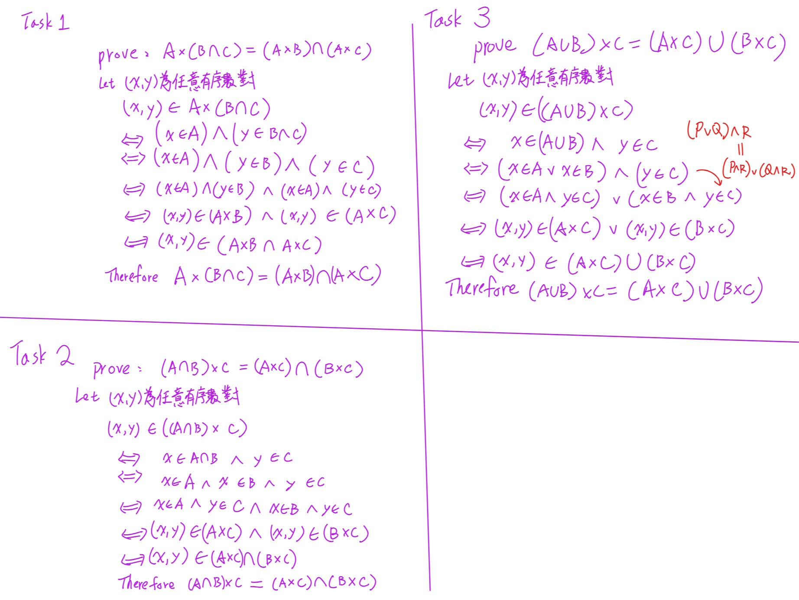
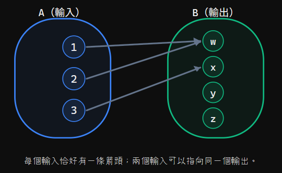
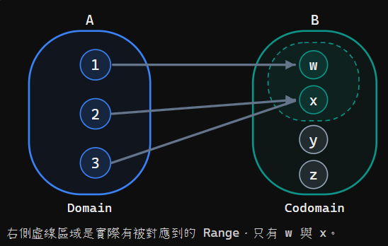
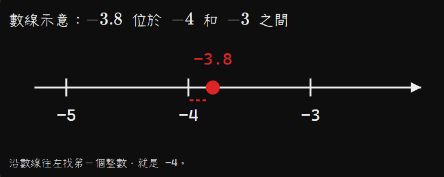
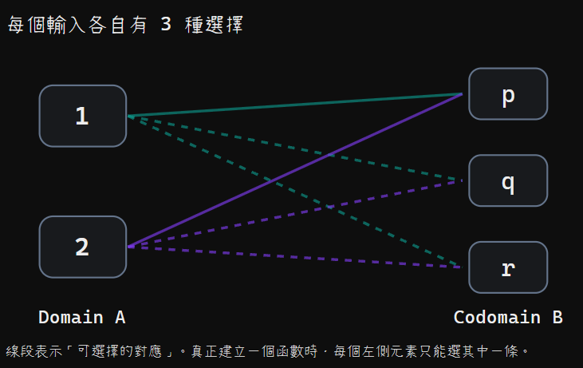
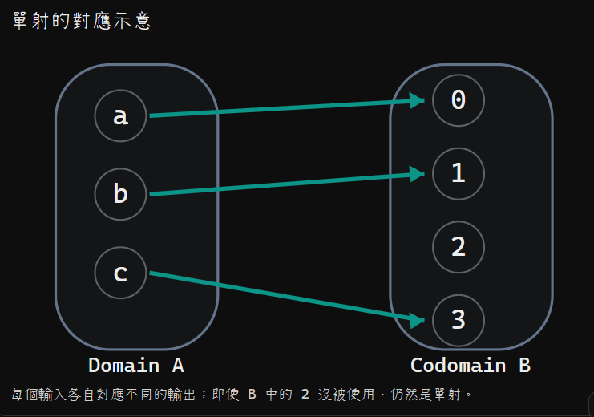
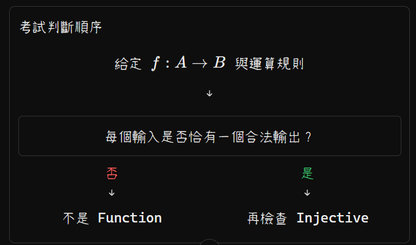
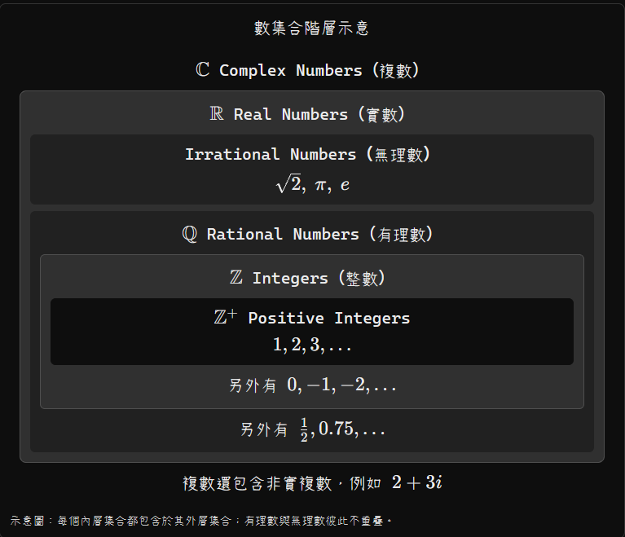

L04
Phase A — Internal Control Surface | TURN=第 1 次對話 | PROMPT=1.17.0 | REFRESH=MANUAL | REFRESH_REMINDER=NONE | STATE={MainlineMode=Transcript; MainlineSource=逐字稿_04_1016.txt; Session=04; SessionSource=FilenamePrefix; WithinSessionOrder=NA; Locator=L3–L15; KP=Lemma 4.2; Boundary=VERIFIED; TranscriptCoverage=UNKNOWN; TeachingState=TAUGHT_CORE; Signals=Explanation/Proof; AlignedReference=課本§4.5/印刷p237/PDF p258; PrecisionStatus=VERIFIED; QuickSheet=PENDING; Practice=NOT_SUBMITTED; TaskOrigin=Generated; OriginalTaskFidelity=NA; AdjQueue=Lemma4.2→Lemma4.3→Theorem4.11→Chapter5; ExerciseDebt=PENDING; TeachingMainlineDebt=YES; AssessmentRequirementDebt=Ex4.3 Q3–5; ReferenceResolutionDebt=逐字稿L13整除依據及L19定理編號已核對; PastExamDebt=UNKNOWN; Weakness=UNKNOWN; Completion=NOT_COMPLETED; Evidence=Transcript L3–L29/Textbook PDF258–259; NextLegal=Teach Lemma4.2 and grade practice} | PLAN={ThisResponse=教學Lemma4.2＋考試速記＋2題練習; ExpectedNext=批改後進入Lemma4.3}
⭐1. Lemma 4.2 — 為什麼質數整除兩數乘積，就一定整除其中一個數？
主線位置：逐字稿_04_1016.txt／Session 04／L3–L15（無 timestamp）對齊參考：課本_discrete_and_combinatorial_mathematics_5th_ed_-_r-_grimaldi.pdf／§4.5／PDF viewer p.258／課本印刷 p.237授課分類：TAUGHT_CORE（老師正式講解並示範證明）
1. 第四堂課的授課順序
已依逐字稿確認第四堂的教學主線：
目前位置
Lemma 4.2：Prime Divisibility（質數整除性）
- Lemma 4.3：推廣到多個整數的乘積
- Theorem 4.11：Fundamental Theorem of Arithmetic（算術基本定理）
- Cartesian Product（笛卡兒積）與 Binary Relation（二元關係）
- Theorem 5.1：笛卡兒積的集合運算定律與證明
- Function（函數）、Domain、Codomain、Range
- One-to-One Function（單射函數）及相關計數
兩個重要來源提醒：
- 逐字稿 L29：老師指定 Exercise 4.3 第 3、4、5 題。
- 逐字稿 L113：Theorem 5.1 證明旁有星號的考試重點提醒，但該行明確標示為依課本標記追加的補註，不是錄音逐字內容。之後教到時會特別處理。
另外，逐字稿 L19 的 Theorem 4.1，核對課本後正確編號是 Theorem 4.11。
2. Core Principle：先理解整除到底代表什麼
我們先看一個敘述：
\[ 5\mid 30 \]
讀作「5 divides 30」，代表 5 可以整除 30。
正式定義是：
\[ a\mid b\iff \exists k\in\mathbb Z,\ b=ak \]
例如：
\[ 30=5\times6 \]
所以 \(5\mid30\)。
現在問題來了：
假設
\[ 5\mid (6\times10) \]
我們知道 5 可以整除兩個數字相乘的結果。
但是，這代表 5 一定可以整除 6 嗎？不一定，因為 \(5\nmid6\)。
它可以整除 10：
\[ 5\mid10 \]
這就是 Lemma 4.2 想告訴我們的規則。
3. Lemma 4.2 的正式定義
課本的敘述可以寫成：
重要
\[
\boxed{p\mid ab\implies p\mid a\ \lor\ p\mid b}
\]
成立的前提：
- \(a,b\in\mathbb Z^+\)：兩個正整數。
- \(p\) 是 Prime（質數）。
- \(p\mid ab\)：質數 \(p\) 整除乘積 \(ab\)。
結論是 \(p\mid a\) 或者 \(p\mid b\)，也可能兩者都成立。
注意！條件中 \(p\) 必須是質數。
例如若 \(p=6\)、\(a=2\)、\(b=3\)：
\[ 6\mid(2\times3) \]
但
\[ 6\nmid2,\qquad6\nmid3 \]
因此不能把原本定理中的質數，隨意改成任何正整數。
4. 最重要的部分：如何證明 Lemma 4.2？
老師在 L9–L15 特別展開這個 Proof（證明）。
這裡採用課本的正式證明邏輯，逐步解釋。
Step 1：分成兩種情況
我們已經知道：
\[ p\mid ab \]
要證明：
\[ p\mid a\lor p\mid b \]
若 \(p\mid a\)，結論已經成立。
所以接下來只需要考慮：
\[ p\nmid a \]
Step 2：利用質數的性質
因為 \(p\) 是質數，正因數只有 \(1\) 和 \(p\)。
又因為 \(p\nmid a\)，所以：
\[
\boxed{\gcd(p,a)=1}
\]
也就是 \(p\) 與 \(a\) Relatively Prime（互質）。
Step 3：使用 Bézout's Identity（貝祖等式）
前面學過：
\[ \gcd(a,b)=ax+by \]
其中 \(x,y\) 是某兩個整數。
因此，既然 \(\gcd(p,a)=1\)，就存在整數 \(x,y\)，使得：
\[
\boxed{px+ay=1}
\]
這是整個證明最關鍵的工具。
Step 4：兩邊同乘 \(b\)
\[ px+ay=1 \]
同乘 \(b\) 得：
\[ pbx+aby=b \]
整理成：
\[
\boxed{p(bx)+(ab)y=b}
\]
現在看等號右側的兩個加項。
第一項
\[ p(bx) \]
因為本身就有 \(p\) 作為因數，所以 \(p\mid p(bx)\)。
第二項
\[ (ab)y \]
因為題目已給 \(p\mid ab\)，所以 \(p\mid(ab)y\)。
既然兩項都可以被 \(p\) 整除，兩項相加也可以被 \(p\) 整除。
因此：
\[ p\mid\bigl[p(bx)+(ab)y\bigr] \]
而：
\[ p(bx)+(ab)y=b \]
所以：
\[
\boxed{p\mid b}
\]
我們成功證明：
\[
\boxed{p\mid ab\implies p\mid a\lor p\mid b}
\]
證畢。
來源核對補充：逐字稿 L13 在第二項的整除依據敘述較不完整。必須明確寫出「因為題目已知 \(p\mid ab\)，所以 \(p\mid(ab)y\)」，不能省略這個理由。
5. 考試要怎麼寫才能拿總分？
依你提供的給分標準，應使用當章節的證明技巧，而且過程完整、答案正確。
這題建議使用以下 Proof Skeleton（證明骨架）：
英文考試參考證明
Suppose \(p\mid ab\).
If \(p\mid a\), the result follows.
Otherwise, \(p\nmid a\). Since \(p\) is prime, \(\gcd(p,a)=1\).
By Bézout's identity, there exist integers \(x,y\) such that
\[ px+ay=1. \]
Multiplying both sides by \(b\), we obtain
\[ p(bx)+(ab)y=b. \]
Since \(p\mid p(bx)\) and \(p\mid(ab)y\), it follows that \(p\mid b\).
Therefore,
\[
\boxed{p\mid a\text{ or }p\mid b.}
\]
\(\square\)
複製證明
這份寫法涵蓋了完整的邏輯鏈，符合爭取總分所需的證明深度；實際得分仍由老師或助教判定。
6. Exam Quick Sheet（考試速記／最短骨架）
Lemma 4.2
\[
p\text{ prime},\quad p\mid ab \implies p\mid a\lor p\mid b
\]
Proof Skeleton：
\[
\begin{aligned} &p\nmid a\\\ &\Downarrow\\\ &\gcd(p,a)=1\\\ &\Downarrow\\\ &px+ay=1\\\ &\Downarrow\ \times b\\\ &p(bx)+(ab)y=b\\\ &\Downarrow\\\ &\boxed{p\mid b} \end{aligned}
\]
Common Trap： \(p\) 必須是質數；第二項整除的依據是題目已知的 \(p\mid ab\)。
7. Practice Tasks（練習任務）
以下兩題均為 [Generated]，不是課本或正式作業原題。
7.1 Task 1 — Counterexample
Let \(p=6\), \(a=2\), and \(b=3\).
Explain why this example shows that the prime-number assumption in Lemma 4.2 is necessary.
學習目標：理解定理的必要條件。可用中文或英文作答。
7.2 Task 2 — Formal Proof
Let \(a,b\) be positive integers and let \(p\) be a prime. Suppose that \(p\mid ab\).
Prove that
\[
p\mid a\quad\text{or}\quad p\mid b
\]
using Bézout's identity. Show all essential steps and justify each divisibility claim.
學習目標：練習完整 Proof（證明），以你提供的「得總分」標準檢查。可打字、手寫拍照或上傳 PDF。
請先回答這兩題。我會按照你提供的給分標準檢查正確性及完整程度；達到標準後，接著進入 Lemma 4.3。
Phase A — Internal Control Surface | TURN=第 1 次對話 | PROMPT=1.17.0 | REFRESH=MANUAL | REFRESH_REMINDER=NONE | STATE={MainlineMode=Transcript; MainlineSource=逐字稿_04_1016.txt; Session=04; SessionSource=FilenamePrefix; WithinSessionOrder=NA; Locator=L17; KP=Lemma4.3; Boundary=L17→L19主題切換; TranscriptCoverage=UNKNOWN; TeachingState=TAUGHT_BRIEF; Signals=Explanation; Reference={Aligned=課本§4.5/PDF p258; PrecisionStatus=VERIFIED}; PreviousKP={Lemma4.2; Teaching=OUTPUT_VERIFIED; QuickSheet=OUTPUT_VERIFIED; Practice=USER_MARKED_CORRECT; ProofSkill=UNVERIFIED}; Practice={LearningObjective=GeneralizedPrimeDivisibility/Proof; Modality=Proof; ExpectedArtifact=MathematicalProof; AcceptedSubmission=Text/Image/PDF; RequiredModality=YES; TaskOrigin=Generated; SourceReopened=NA; SourceIdentity=NA; ContentFidelity=GENERATED; SourceMatch=NA; AssessmentFidelity=Learning; SubmissionStatus=NOT_SUBMITTED}; AdjQueue=Lemma4.3→Theorem4.11→Chapter5; ExerciseDebt=PENDING; TeachingMainlineDebt=YES; AssessmentRequirementDebt=Ex4.3 Q3-5 PENDING; ReferenceResolutionDebt=NONE_KNOWN_FOR_CURRENT_KP; PastExamDebt=UNKNOWN; Weakness=NONE_RECORDED; Completion=PREVIOUS_PRACTICE_ACCEPTED_BY_USER_OVERRIDE; Evidence=Transcript L17-L19/Textbook PDF258; Blockers=NONE_FOR_CURRENT_TEACHING; NextLegal=TeachLemma4.3} | PLAN={ThisResponse=Lemma4.3教學＋ExamQuickSheet＋Proof練習; ExpectedNext=Theorem4.11}
1.1 上一輪練習結果
依照你的要求，Lemma 4.2 的兩題都視同答對，不列入錯題，也不要求你重新回答。
因為沒有實際提交證明過程，所以 Proof（證明）能力仍標記為尚未實際驗證，不會誤記成正式作業已取得總分。
接下來繼續第四堂課下一個知識點。
⭐2. Lemma 4.3 — 質數整除多個整數的乘積
主線位置：逐字稿_04_1016.txt／Session=04／L17（前接 L15，後續 L19 切換 Theorem 4.11）對齊參考：課本 §4.5／PDF viewer p.258／印刷 p.237Teaching State：TAUGHT_BRIEF（老師快速說明是 Lemma 4.2 的推廣）
1. Core Principle：為什麼需要 Lemma 4.3？
我們剛剛學的 Lemma 4.2 是：
\[
\boxed{p\mid ab\implies p\mid a\lor p\mid b}
\]
但它只處理 兩個數相乘。
假設今天有五個數：
\[ p\mid a_1a_2a_3a_4a_5 \]
我們是否也可以推論：\(p\) 一定會整除其中至少一個數？
答案是可以。
這就是 Lemma 4.3。
2. Lemma 4.3 正式定義
假設：
\[ a_1,a_2,\ldots,a_n\in\mathbb Z^+ \]
而且 \(p\) 是 Prime（質數）。
如果：
\[ p\mid a_1a_2\cdots a_n \]
那麼必定存在某個 \(i\)，其中 \(1\le i\le n\)，使得：
\[
\boxed{p\mid a_i}
\]
特別注意：
For some（至少某一個）不等於 For all（每一個）。
例如：
\[ 7\mid(6\times14\times5) \]
因為 \(7\mid14\)，所以定理成立，但 7 不需要同時整除 6 和 5。
3. 這個定理為什麼成立？
我們先使用已學過的 Lemma 4.2。
假設：
\[ p\mid a_1a_2a_3a_4 \]
把前面三個數視為同一組：
\[ p\mid(a_1a_2a_3)a_4 \]
依 Lemma 4.2：
\[ p\mid(a_1a_2a_3)\quad\lor\quad p\mid a_4 \]
如果 \(p\mid a_4\)，我們就證明成功了。
否則，繼續拆：
\[ p\mid(a_1a_2)a_3 \]
因此：
\[ p\mid(a_1a_2)\quad\lor\quad p\mid a_3 \]
再繼續拆：
\[ p\mid a_1\quad\lor\quad p\mid a_2 \]
所以，最後至少會找到一個可以被 \(p\) 整除的因數。
證明的邏輯流程
flowchart TD
A["p 整除 a₁a₂a₃a₄"] --> B{"p 整除 a₄？"}
B -->|是| Z["結論成立：p 至少整除其中一個因數"]
B -->|否，依 Lemma 4.2| C{"p 整除 a₃？"}
C -->|是| Z
C -->|否，依 Lemma 4.2| D{"p 整除 a₂？"}
D -->|是| Z
D -->|否，依 Lemma 4.2| E["p 整除 a₁"]
E --> Z每拆開一組乘積，就再使用一次 Lemma 4.2，直到找到一個符合條件的因數。
這個推理可以推廣到任何有限個正整數。
4. 如果考試要正式證明，應該怎麼寫？
老師在 L17 只簡短說明 Lemma 4.3 是 Lemma 4.2 的推廣；課本也將證明留給讀者，沒有提供完整證明。
以下是依照課程已學的 Mathematical Induction（數學歸納法）補上的正式證明方法，並非聲稱老師逐字講過這份證明。
Base Case（基礎步驟）：
當 \(n=1\)，若 \(p\mid a_1\)，結論自然成立。
Inductive Hypothesis（歸納假設）：
假設對 \(n=k\) 成立，即：
\[ p\mid a_1a_2\cdots a_k \]
時，\(p\) 必定整除其中某個 \(a_i\)。
Inductive Step（歸納步驟）：
考慮 \(n=k+1\)：
\[
p\mid(a_1a_2\cdots a_k)a\_{k+1}
\]
依 Lemma 4.2：
\[
p\mid(a_1\cdots a_k)\lor p\mid a\_{k+1}
\]
若 \(p\mid a\_{k+1}\)，結論成立。
否則 \(p\mid a_1\cdots a_k\)，依歸納假設，\(p\) 整除前 \(k\) 個數中的某一個。
因此，在兩種情況下，都有：
\[
\boxed{\exists i\in\{1,\ldots,k+1\},\ p\mid a_i}
\]
由數學歸納法，Lemma 4.3 對所有正整數 \(n\) 成立。
5. Lemma 4.3 與下一個定理的關係
下一個知識點是 Theorem 4.11 — Fundamental Theorem of Arithmetic（算術基本定理）。
它的 Uniqueness（唯一性）證明會用到 Lemma 4.3：
當同一個整數有兩組質因數分解時，利用 Lemma 4.3 證明其中一組的質數必須出現在另一組。
這就是為什麼老師在進入算術基本定理之前，先介紹這兩個 Lemma。
6. Exam Quick Sheet（考試速記／最短骨架）
Lemma 4.3
公式
\[
\boxed{p\mid\prod_{i=1}^{n}a_i\implies\exists i,\ p\mid a_i}
\]
6.1 每個符號代表什麼？
| 符號 | 英文／中文 | 意思 |
|---|---|---|
| \(p\) | Prime（質數） | 例如 2、3、5、7 |
| \(\mid\) | Divides（整除） | \(p\mid a\)：\(p\) 整除 \(a\) |
| \(\displaystyle\prod\) | Product（連乘） | 把數字全部乘起來 |
| \(i=1\) | Starting Index（起始索引） | 從第 1 個數開始 |
| \(n\) | Upper Limit（上限） | 一直乘到第 \(n\) 個數 |
| \(\implies\) | Implies（蘊涵） | 如果左邊成立，那麼右邊成立 |
| \(\exists\) | There Exists（存在） | 至少存在一個 |
前提：\(p\) 是質數，\(a_i\in\mathbb Z^+\)。
Proof Skeleton：
- Base case：\(n=1\) 成立。
- 假設 \(n=k\) 成立。
- \(n=k+1\)：用 Lemma 4.2 拆成前 \(k\) 個因數與最後一個。
- 套用 Inductive Hypothesis。
- 得證。
Common Trap： 至少一個因數可以被 \(p\) 整除，不代表所有因數都可以。
7. Practice Tasks（練習任務）
7.1 Task 1 — Proof
[Generated: Lemma 4.3 Application]
Let \(p\) be a prime and let \(a,b,c\) be positive integers.
Suppose that
\[ p\mid abc \]
Prove that
\[
p\mid a\quad\text{or}\quad p\mid b\quad\text{or}\quad p\mid c
\]
using Lemma 4.2. Show the logical steps.
Expected Artifact：簡短且完整的數學證明，可用文字、LaTeX 或手寫照片提交。
Phase A — Internal Control Surface | TURN=第 1 次對話 | PROMPT=1.17.0 | REFRESH=MANUAL | REFRESH_REMINDER=NONE | STATE={MainlineMode=Transcript; MainlineSource=逐字稿_04_1016.txt; Session=04; SessionSource=FilenamePrefix; Locator=L19–L27; KP=Theorem4.11; Boundary=VERIFIED_BY_TOPIC_CHANGE_L29; TranscriptCoverage=UNKNOWN; TeachingState=TAUGHT_CORE; Signals=ExistenceProof/UniquenessProof/HomeworkL29; Reference={Textbook§4.5/PDFp259/Printedp238; PrecisionStatus=VERIFIED}; PreviousKP={Lemma4.3; Teaching=OUTPUT_VERIFIED; QuickSheet=OUTPUT_VERIFIED; Practice=USER_MARKED_CORRECT; ProofSkill=UNVERIFIED}; Practice={LearningObjective=PrimeFactorizationAndProof; Modality=Calculation+Proof; RequiredModality=YES_FOR_PROOF; TaskOrigin=Generated; ContentFidelity=GENERATED; SourceMatch=NA; SubmissionStatus=NOT_SUBMITTED}; AdjQueue=Theorem4.11→HomeworkEx4.3Q3–5→Chapter5; ExerciseDebt=PENDING_FOR_NEW_KP; TeachingMainlineDebt=YES; AssessmentRequirementDebt=Ex4.3Q3–5_PENDING; ReferenceResolutionDebt=NONE_KNOWN_FOR_CURRENT_KP; PastExamDebt=UNKNOWN; Completion=IN_PROGRESS; Evidence=TranscriptL19–L29/TextbookPDF259; NextLegal=TeachTheorem4.11} | PLAN={ThisResponse=教學存在性與唯一性證明＋ExamQuickSheet＋2題練習; ExpectedNext=處理老師指定作業再進入Chapter5}
上一題 Lemma 4.3 的證明依你的要求視同答對，不列入錯題。因為沒有提交實際證明，所以不額外宣稱證明能力已驗證。
接下來進入第四堂課下一個正式知識點。
⭐3. Theorem 4.11 — Fundamental Theorem of Arithmetic（算術基本定理）
主線位置：逐字稿_04_1016.txt／Session=04／L19–L27（無 timestamp）對齊參考：課本 §4.5／PDF viewer p.259／印刷 p.238Teaching State：TAUGHT_CORE（老師正式講解存在性與唯一性兩部分的證明）
1. Core Principle：這個定理要解決什麼問題？
先想一個問題：
是不是每一個大於 1 的整數，都能夠拆成質數相乘，而且拆出來的結果一定相同？
例如：
\[ 60=2\times2\times3\times5 \]
也可以寫成：
\[ 60=5\times3\times2\times2 \]
這兩種看似不同的表示方式，其實只改變了順序，使用的質因數完全相同。
算術基本定理要證明兩件事：
- Existence（存在性）：每個大於 1 的整數一定能拆成質數乘積。
- Uniqueness（唯一性）：不管怎麼拆，最後得到的質因數與各自出現次數一定相同，只允許順序不同。
2. Theorem 4.11 正式定義
課本 Theorem 4.11 的意思是：
Every integer \(n>1\) can be written as a product of primes uniquely, up to the order of the primes.
也就是：
\[
\boxed{n=p_1p_2\cdots p_k}
\]
其中所有 \(p_i\) 都是質數。
如果將相同質數合併成指數，也可以寫成：
\[
\boxed{n=p_1^{a_1}p_2^{a_2}\cdots p_k^{a_k}}
\]
這裡 \(p_1<p_2<\cdots<p_k\)，各 \(a_i\) 為正整數。
例如：
\[ 72=2\times2\times2\times3\times3 \]
因此：
\[
\boxed{72=2^3\times3^2}
\]
注意，質因數不一定彼此不同，同一個質數可以重複出現。把相同質數合併成次方，只是另一種表示法。
若 \(n\) 自己就是質數，例如 \(n=13\)，那它的質因數分解就是 \(13\) 本身。
3. 第一部分：Existence（存在性）怎麼證明？
老師在逐字稿 L21–L23 使用的是 Proof by Contradiction（反證法），搭配 Smallest Counterexample（最小反例）。
我們要證明：
\[
\forall n>1,\quad n\text{ 可以寫成質數的乘積}
\]
Step 1：假設定理不成立
假設存在某個大於 1 的整數，無法表示為質數的乘積。
選出其中最小的一個，稱為 \(m\)。
Step 2：證明 \(m\) 一定是合數
因為如果 \(m\) 是質數，它本身就已經是一個質數乘積（只有一個因數）。
所以 \(m\) 必須是 Composite Number（合數）。
因此存在整數 \(a,b\)，滿足：
\[ m=ab,\qquad 1<a<m,\quad1<b<m \]
Step 3：利用最小反例的性質
由於 \(m\) 是最小的反例，而 \(a\) 和 \(b\) 都比 \(m\) 小，所以它們都可以分解成質數的乘積。
假設：
\[ a=p_1p_2\cdots p_r \]
\[ b=q_1q_2\cdots q_s \]
則：
\[ m=ab=p_1p_2\cdots p_rq_1q_2\cdots q_s \]
這代表 \(m\) 也能分解成質數乘積。
與最初假設矛盾。
所以：
\[
\boxed{\text{Every integer }n>1\text{ has a prime factorization.}}
\]
存在性證畢。
4. 第二部分：Uniqueness（唯一性）怎麼證明？
這是老師在 L25 展開的另一個重點，而且會用到剛學的 Lemma 4.3。
假設某個正整數 \(n>1\) 有兩種質因數分解：
\[ n=p_1p_2\cdots p_s \]
以及：
\[ n=q_1q_2\cdots q_t \]
其中所有的 \(p_i,q_j\) 都是質數。
Step 1：先考慮第一個質數 \(p_1\)
因為：
\[ p_1\mid n \]
又因為：
\[ n=q_1q_2\cdots q_t \]
所以：
\[ p_1\mid q_1q_2\cdots q_t \]
Step 2：使用 Lemma 4.3
Lemma 4.3 告訴我們：
當質數整除多個整數的乘積時，必定整除其中至少一個因數。
因此存在某個 \(j\)，使得：
\[ p_1\mid q_j \]
但是 \(p_1\) 與 \(q_j\) 都是質數。
所以只能是：
\[
\boxed{p_1=q_j}
\]
重要
p1, p2 都是質數，如果 p1|p2，那 p1 = p2
\[
\boxed{p,q\text{ are prime},\ p\mid q\implies p=q}
\]
Step 3：消去共同質因數
兩組分解都含有相同的質數，因此把這個相同質因數從等式兩邊消去。
接著對剩下的乘積重複使用 Lemma 4.3，直到所有質因數都配對完成。
如果某一側還剩下額外的質數，其乘積必須等於 1，但大於 1 的質數相乘不可能等於 1，所以不可能有剩餘因數。
因此兩組質因數完全相同，包括每個質數出現的次數。
\[
\boxed{\text{Prime factorization is unique up to order.}}
\]
唯一性證畢。
5. 這個定理容易搞錯的地方
| 常見錯誤 | 正確觀念 |
|---|---|
| 質因數一定要彼此不同 | 質數可以重複，例如 \(2^3\) |
| 換一個排列順序就是另一種分解 | 順序不同仍視為同一種質因數分解 |
| 只證明每個數能分解，就證明了整個定理 | 必須分別證明 Existence 與 Uniqueness |
| 唯一性只靠直接觀察 | 正式證明應使用 Lemma 4.3 與消去共同因數 |
| \(1\) 是質數，所以也能加入分解 | \(1\) 不是質數，而且定理限定 \(n>1\) |
老師逐字稿 L19 提到將質數由小到大排列。這是為了得到固定的標準表示方式；定理本身允許改變質數的順序。
另外，逐字稿把這個定理稱為 Theorem 4.1，但課本 §4.5 的正式編號是 Theorem 4.11。
6. Exam Quick Sheet（考試速記／最短骨架）
重要
Theorem 4.11 — Fundamental Theorem of Arithmetic
\[
\boxed{n>1\implies n=p_1p_2\cdots p_k}
\]
Prime factorization（質因數分解）具有：
- Existence：必定存在。
- Uniqueness：除排列順序外，分解唯一。
Proof Skeleton：
Existence：
\[
\text{最小反例 }m \rightarrow m=ab \rightarrow a,b<m \rightarrow\text{矛盾}
\]
Uniqueness：
\[
\begin{aligned} p_1\mid q_1\cdots q_t &\xRightarrow{\text{Lemma 4.3}}p_1\mid q_j\\\ &\Rightarrow p_1=q_j \end{aligned}
\]
配對、消去、重複，得到所有質因數及其重數一致。
Common Trap： 存在性與唯一性是兩個不同的證明，考試不能只寫其中一個。
7. Practice Tasks（練習任務）
7.1 Task 1 — Prime Factorization
[Generated: Theorem 4.11 Practice]
Find the prime factorization of \(420\). Express your answer using prime powers in increasing order of primes.
Explain whether changing the order of the prime factors produces a different prime factorization under Theorem 4.11.
學習目標：質因數分解及唯一性的理解。可用文字、公式或手寫照片作答。
7.2 Task 2 — Proof
[Generated: Theorem 4.11 Proof Practice]
Prove that every integer \(n>1\) has a unique prime factorization, up to the order of its prime factors.
Your proof must include both:
- Existence, using the smallest counterexample method.
- Uniqueness, using Lemma 4.3.
學習目標：能完整寫出存在性與唯一性的正式證明。這題會依你提供的得分標準檢查證明方法、關鍵步驟及完整性。
等你回答後，我們會先處理老師在逐字稿 L29 指定的 Exercise 4.3 第 3、4、5 題（需重新核對原題），再依老師的授課順序進入第五章。
Phase A — Internal Control Surface | TURN=第 2 次對話 | PROMPT=1.17.0 | REFRESH=NO（作答處理優先） | REFRESH_REMINDER=NONE | STATE={MainlineMode=Transcript; Source=逐字稿_04_1016.txt; Session=04; SessionSource=FilenamePrefix; Locator=L55–L79; KP=CartesianProduct; Boundary=L81切換Relation; TranscriptCoverage=UNKNOWN; TeachingState=TAUGHT_CORE; Reference=Textbook§5.1/PDFp268–270; PrecisionStatus=VERIFIED; QuickSheet=PENDING; PreviousAssessment=Ex4.3Q3-5_USER_MARKED_CORRECT; ProofArtifact=UNVERIFIED; AssessmentRequirementDebt=DEFERRED_UNVERIFIED; Practice=NOT_YET_ISSUED_FOR_CURRENT_KP; ExerciseDebt=PENDING; TeachingMainlineDebt=YES; ReferenceResolutionDebt=Chapter5Title_ASR_UNCERTAINTY; PastExamDebt=UNKNOWN; Weakness=NONE_RECORDED; Completion=IN_PROGRESS; NextLegal=CartesianProduct} | PLAN={ThisResponse=笛卡兒積教學＋ExamQuickSheet＋自適應練習; ExpectedNext=Relation}
Exercise 4.3 第 3、4、5 題依照你的要求，全部視同答對，不列入錯題。因為沒有實際繳交解答，證明過程與正式作業的總分資格仍未驗證。
現在正式進入第四堂課的第五章內容。
⭐5. Cartesian Product（笛卡兒積）— 如何將兩個集合的元素組成所有可能的有序對？
主線位置：逐字稿_04_1016.txt／Session=04／L55–L79（無 timestamp）自然邊界：L81 開始切換到 Binary Relation（L101–L105 老師會回頭補充笛卡兒積）對齊參考：Grimaldi 課本 §5.1／PDF viewer p.269–270／印刷 p.248–249Teaching State：TAUGHT_CORE
先注意一處來源差異：逐字稿 L55 寫成 Chapter 5 — Generating Functions，但課本第五章正式名稱是 Relations and Functions（關係與函數）。由後續授課內容可確認正在教 §5.1 Cartesian Products and Relations。此處將逐字稿章名標為可能的口誤或辨識錯誤。
1. Core Principle：笛卡兒積到底在解決什麼問題？
假設你有兩個集合：
\[
A=\{1,2\}
\]
\[
B=\{x,y\}
\]
現在我們想做一件事情：
從集合 \(A\) 挑出一個元素，再從集合 \(B\) 挑出一個元素，把兩個元素組成一組。
會有這些組合：
\[ (1,x),\ (1,y),\ (2,x),\ (2,y) \]
這四組就構成了 \(A\times B\)。
從 A 到 B 的所有可能配對
flowchart LR
subgraph A["集合 A"]
direction TB
a1["1"]
a2["2"]
end
subgraph B["集合 B"]
direction TB
bx["x"]
by["y"]
end
a1 --> bx
a1 --> by
a2 --> bx
a2 --> by左側每個元素都分別與右側每個元素配對，因此一共得到四個 Ordered Pairs（有序對）。
所以：
\[
\boxed{A\times B=\{(1,x),(1,y),(2,x),(2,y)\}}
\]
這就是 Cartesian Product（笛卡兒積），老師也稱為 Cross Product。
2. 正式定義：Definition 5.1
根據課本 §5.1：
\[
\boxed{A\times B=\{(a,b)\mid a\in A,\ b\in B\}}
\]
逐項解釋：
| 符號 | 意思 |
|---|---|
| \(A\times B\) | \(A\) 與 \(B\) 的笛卡兒積 |
| \((a,b)\) | Ordered Pair（有序對） |
| \(a\in A\) | 第一個元素從 \(A\) 選出 |
| \(b\in B\) | 第二個元素從 \(B\) 選出 |
| \(\mid\) | Such that（滿足以下條件） |
最重要的是 Ordered（有順序）。
例如：
\[ (2,5)\ne(5,2) \]
而：
\[ (a,b)=(c,d)\iff a=c\land b=d \]
也就是兩個有序對相等，必須第一個位置相同，第二個位置也相同。
3. 老師的例子：為什麼 \(A\times B\ne B\times A\)？
老師在逐字稿 L77 舉的例子，對應課本 Example 5.1。
令：
\[
A=\{2,3,4\},\qquad B=\{4,5\}
\]
我們先算 \(A\times B\)：
\[
\boxed{ \begin{aligned} A\times B=\{&(2,4),(2,5),\\\ &(3,4),(3,5),\\\ &(4,4),(4,5)\} \end{aligned} }
\]
再將順序顛倒，計算 \(B\times A\)：
\[
\boxed{ \begin{aligned} B\times A=\{&(4,2),(4,3),(4,4),\\\ &(5,2),(5,3),(5,4)\} \end{aligned} }
\]
你會發現：
- \(A\times B\) 有 6 個元素。
- \(B\times A\) 也有 6 個元素。
- 但它們的有序對並不完全相同。
因此：
\[
\boxed{A\times B\ne B\times A}
\]
對這個例子成立。
不能因為兩個集合的元素數量相同，就認為兩個集合相等。
3.1 元素數量怎麼算？
假設：
\[ |A|=m,\qquad |B|=n \]
這裡的 \(|A|\) 是集合元素數量，稱為 Cardinality（基數）。
因為 \(A\) 的每個元素都能與 \(B\) 的 \(n\) 個元素配對，因此：
\[
\boxed{|A\times B|=|A|\cdot|B|=mn}
\]
這是之前學過的 Rule of Product（乘法原理）。
例如：
\[ |A|=3,\quad |B|=2 \]
所以：
\[ |A\times B|=3\times2=6 \]
注意：雖然有限集合滿足
\[ |A\times B|=|B\times A| \]
但通常不能推出：
\[ A\times B=B\times A \]
4. 推廣到三個以上的集合：n-tuples（n 元組）
老師在 L73–L79 接著把兩個集合的笛卡兒積，推廣成多個集合。
例如：
\[ A\times B\times C \]
其中每個元素都有三個位置：
\[ (a,b,c) \]
這種元素稱為 Ordered Triple（有序三元組），也就是 3-tuple。
一般化後：
\[
\boxed{A_1\times A_2\times\cdots\times A_n}
\]
其中每個元素都是：
\[ (a_1,a_2,\ldots,a_n) \]
而且必須滿足：
\[ a_i\in A_i \]
同時，兩個 n-tuples 相等，代表每個對應位置的元素都相同。
4.1 老師提到的 \(B^2\) 和 \(B^3\)
令：
\[
B=\{4,5\}
\]
那麼：
\[ B^2=B\times B \]
\[
B^2=\{(4,4),(4,5),(5,4),(5,5)\}
\]
共有：
\[ |B^2|=2^2=4 \]
再看：
\[ B^3=B\times B\times B \]
共有：
\[
\boxed{|B^3|=2^3=8}
\]
例如：
\[ (4,5,5)\in B^3 \]
因為三個位置都從 \(B\) 中挑選元素。
所以可以推廣：
\[
\boxed{|B^n|=|B|^n}
\]
這也是老師在 L79 特別示範的計數方式。
5. 一個容易忽略的地方：笛卡兒積與 Universal Set（全集）
老師在 L61–L71 討論了這個問題。
假設：
\[ A\subseteq U_1,\qquad B\subseteq U_2 \]
那麼我們能確定：
\[
\boxed{A\times B\subseteq U_1\times U_2}
\]
因為 \(A\times B\) 的每一個有序對，也都能從 \(U_1\) 與 \(U_2\) 中選出。
但是，即使：
\[ A\subseteq U,\qquad B\subseteq U \]
也不一定有：
\[ A\times B\subseteq U \]
為什麼？
例如：
\[
U=\{1,2,3\},\quad A=\{1\},\quad B=\{2\}
\]
則：
\[
A\times B=\{(1,2)\}
\]
注意，\((1,2)\) 是有序對，不是數字 \(1\) 或 \(2\)。
因此：
\[ (1,2)\notin U \]
也就不能說 \(A\times B\subseteq U\)。
關鍵是：原本集合的元素，與笛卡兒積產生的有序對，是不同層次的物件。
6. Exam Quick Sheet（考試速記／最短骨架）
Cartesian Product
\[
\boxed{A\times B=\{(a,b)\mid a\in A,\ b\in B\}}
\]
Ordered Pair Equality
\[ (a,b)=(c,d)\iff a=c\land b=d \]
Cardinality
\[
\boxed{|A\times B|=|A||B|}
\]
\[
\boxed{|B^n|=|B|^n}
\]
Common Traps
- 一般而言 \(A\times B\ne B\times A\)。
- 元素數量相同，不代表集合相等。
- \((a,b)\) 與 \((b,a)\) 通常不同。
- \(A\subseteq U_1,\ B\subseteq U_2\) 時，\(A\times B\subseteq U_1\times U_2\)。
7. Practice Tasks（練習任務）
7.1 Task 1 — Cartesian Product Construction
[Generated: Cartesian Product Practice]
Let
\[
A=\{1,3\},\qquad B=\{3,4\}
\]
Find:
(a) \(A\times B\)
(b) \(B\times A\)
(c) \(|A\times B|\)
(d) Determine whether \(A\times B=B\times A\), and explain your answer.
7.2 Task 2 — Ordered Triples
[Generated: n-Tuple Practice]
Let \(B=\{0,1\}\).
List all the elements of \(B^3\) and determine \(|B^3|\).
7.3 Task 3 — Universal Set and Cartesian Product
[Generated: Cartesian Product and Subset Practice]
Let
\[
U=\{1,2\},\quad A=\{1\},\quad B=\{2\}
\]
Determine whether \(A\times B\subseteq U\). Justify your answer and state whether \(A\times B\subseteq U\times U\).
可以直接打字或手寫拍照作答。批改後會依第四堂課的授課順序，接著進入 Binary Relation（二元關係）。
Phase A — Internal Control Surface | TURN=第 3 次對話 | PROMPT=1.17.0 | REFRESH=NO（本輪主要意圖為作答視同正確） | REFRESH_REMINDER=NONE | STATE={MainlineMode=Transcript; MainlineSource=逐字稿_04_1016.txt; Session=04; SessionSource=FilenamePrefix; Locator=CartesianProduct L55–L79; NextSpan=L81–L99; Boundary=BinaryRelation於L99收束、L101回到CartesianProduct; TranscriptCoverage=UNKNOWN; TeachingState=TAUGHT_CORE; Reference=Textbook§5.1 PDFp271–272; PrecisionStatus=VERIFIED; QuickSheet=CartesianProduct_OUTPUT_VERIFIED; Practice=CartesianProduct_Task1–3_USER_MARKED_CORRECT; RequiredModality=NO; SubmissionStatus=USER_DECLARED_CORRECT; OriginalTaskFidelity=NA; ExerciseDebt=PreviousTasks_ISSUED_AND_USER_ACCEPTED; TeachingMainlineDebt=BinaryRelation及後續授課內容; AssessmentRequirementDebt=Theorem5.1Proof_PENDING; ReferenceResolutionDebt=ChapterTitle與ExampleNumber待核對但不影響本輪公式; PastExamDebt=104Quiz1Problem1_DIRECT_DEFERRED; Weakness=NONE_RECORDED; Completion=CartesianProduct_LEARNING_PASSED_BY_USER_DECLARATION_NOT_INDEPENDENTLY_VERIFIED; Evidence=上一輪教學與三題練習已輸出; NextLegal=BinaryRelation} | PLAN={ThisResponse=BinaryRelation教學、ExamQuickSheet、四項練習; ExpectedNext=CartesianProduct空集合性質與Theorem5.1}
上一輪 Cartesian Product（笛卡兒積）的 Task 1、2、3，依你的要求全部視同答對，不列錯題，也不要求重做。這是依你的指示通過練習，並非實際答案已經過驗證。
現在按照第四堂課的授課順序，進入 Binary Relation（二元關係）。
⭐Binary Relation（二元關係）— 如何從所有可能配對中，選出符合條件的關係？
主線位置：逐字稿_04_1016.txt／Session=04／L81–L99（無 timestamp）自然邊界：L99 例子結束；L101 老師回到 Cartesian Product 的特殊性質對齊參考：Grimaldi 課本 §5.1／Definition 5.2、Examples 5.5–5.8／PDF viewer p.271–272（印刷 p.250–251）Teaching State：TAUGHT_CORE
1. Core Principle：Relation 跟 Cartesian Product 有什麼差別？
上一輪我們學到：
\[
A=\{2,3,4\},\quad B=\{4,5\}
\]
那麼：
\[
\begin{aligned} A\times B=\{&(2,4),(2,5),\\\ &(3,4),(3,5),\\\ &(4,4),(4,5)\} \end{aligned}
\]
這是所有可能的配對。
但是實際上，我們可能只需要其中幾種配對，例如：
\[
R=\{(2,4),(3,4),(4,5)\}
\]
你有沒有發現？
\[ R\subseteq A\times B \]
這就是老師在逐字稿 L81–L87 想表達的核心：
Cartesian Product 列出所有可能配對；Binary Relation 從這些配對中選出一部分。
2. 正式定義：Definition 5.2
根據課本：
\[
\boxed{R\subseteq A\times B}
\]
我們稱 \(R\) 為一個從 \(A\) 到 \(B\) 的 Binary Relation（二元關係）。
重要
為什麼叫 Binary Relation（二元關係）？
因為 Binary 的意思是「二元的」，代表這個 Relation（關係）每次涉及兩個物件（或兩個參數）。
若關係發生在同一個集合 \(A\) 上：
\[
\boxed{R\subseteq A\times A}
\]
則稱為 Relation on A（定義在 \(A\) 上的關係）。
這裡一定要分清楚兩件事：
- \((a,b)\in R\)：某一個有序對屬於關係 \(R\)。
- \(R\subseteq A\times B\)：關係 \(R\) 是笛卡兒積的一個子集合。
注意，二元關係不要求每個 \(A\) 的元素都一定有配對，也不要求只能配對一個 \(B\) 的元素。
3. 用 Arrow Diagram（箭頭圖）理解 Relation
我們使用剛剛的例子：
\[
R=\{(2,4),(3,4),(4,5)\}
\]
flowchart LR
subgraph A["集合 A"]
direction TB
a2["2"]
a3["3"]
a4["4"]
end
subgraph B["集合 B"]
direction TB
b4["4"]
b5["5"]
end
a2 --> b4
a3 --> b4
a4 --> b5這張圖只有三條箭頭，分別代表 \(R\) 中的三個有序對。
例如：
\[ (2,4)\in R \]
但：
\[ (2,5)\notin R \]
因為我們沒有把 \((2,5)\) 選進 \(R\)。
老師在 L87 也特別強調：即使是 Empty Set（空集合），仍然可以是一種 Relation。
因為：
\[
\boxed{\varnothing\subseteq A\times B}
\]
也就是說，完全不選任何配對，也是一個合法的 Binary Relation。
4. 重要公式：兩個集合之間有幾種 Relations？
這是老師在 L89–L93 講解的計數問題。
假設：
\[ |A|=m,\qquad |B|=n \]
我們已經知道：
\[ |A\times B|=mn \]
那麼 \(A\times B\) 裡的每一個有序對，都有兩種選擇：
放進 \(R\)
選入關係
不放進 \(R\)
不選入關係
由 Rule of Product（乘法原理），一共有：
\[
\underbrace{2\times2\times\cdots\times2}_{mn\text{ 次}}
\]
所以：
\[
\boxed{\text{Number of Relations from }A\text{ to }B=2^{mn}}
\]
這裡 \(m\) 與 \(n\) 都是有限集合的元素數量。
4.1 老師的例子
\[
A=\{2,3,4\},\quad B=\{4,5\}
\]
因此：
\[ |A|=3,\qquad |B|=2 \]
\[ |A\times B|=3\times2=6 \]
所以：
\[
\boxed{2^6=64}
\]
代表 \(A\) 到 \(B\) 總共有 64 種不同的 Binary Relations。
這 64 種包含 Empty Relation（空關係）與 Full Relation（整個 \(A\times B\)）。
互動理解：6 個有序對，每個決定是否選入 R
(2,4)
(2,5)
(3,4)
(3,5)
(4,4)
(4,5)
目前選出的關係：
R = {(2,4), (3,4), (4,5)}
已選 3 / 6 組清空選擇
不論你怎麼選，得到的 R 都是合法的二元關係。6 個配對各有選或不選兩種可能，所以總共是 64 種。
5. 用條件來定義 Relation
老師在 L93–L99 還介紹一個重要觀念：
除了直接列出 \(R\) 中的有序對，我們也可以用數學條件描述關係。
例如：
\[
R=\{(m,n)\in\mathbb N\times\mathbb N\mid n=7m\}
\]
意思是：只有滿足 \(n=7m\) 的有序對，才能放進 \(R\)。
所以：
\[ (1,7)\in R \]
因為：
\[ 7=7(1) \]
而：
\[ (3,21)\in R \]
因為：
\[ 21=7(3) \]
但是：
\[ (2,21)\notin R \]
因為：
\[ 21\ne7(2) \]
5.1 Relation 的簡寫：\(aRb\)
如果：
\[ (a,b)\in R \]
我們也可以寫成：
\[
\boxed{aRb}
\]
所以：
\[ (3,21)\in R\iff 3R21 \]
這是表示「3 與 21 滿足關係 \(R\)」，不是把 \(R\) 當成乘法符號。
6. Relation on a Set：集合跟自己建立關係
老師也在 L93–L95 提到 Power Set（冪集合）的例子。
假設：
\[
B=\{1,2\}
\]
\[
A=\mathcal P(B) =\{\varnothing,\{1\},\{2\},\{1,2\}\}
\]
把所有子集合變成一個集合
這裡的 \(\mathcal P\) 是 Power Set（冪集）的符號。
\[
\boxed{\mathcal P(B)=\text{所有 }B\text{ 的子集合所形成的集合}}
\]
其中 \(\mathcal P\) 是特殊字體的大寫 P，來自英文 Power
也就是把所有子集合變成一個集合
現在定義：
\[
R=\{(C,D)\in A\times A\mid C\subseteq D\}
\]
意思是：只有當 \(C\) 是 \(D\) 的子集合時，\((C,D)\) 才屬於 \(R\)。
例如：
\[
(\{1\},\{1,2\})\in R
\]
因為：
\[
\{1\}\subseteq\{1,2\}
\]
但是：
\[
(\{1,2\},\{1\})\notin R
\]
因為：
\[
\{1,2\}\nsubseteq\{1\}
\]
這個例子說明：一個 Relation 可以由某種明確的邏輯條件決定，不必隨意選配對。
7. Exam Quick Sheet（考試速記／最短骨架）
Binary Relation
\[
\boxed{R\subseteq A\times B}
\]
Relation on A
\[
\boxed{R\subseteq A\times A}
\]
Number of Relations（有限集合）
\[
\boxed{|A|=m,\ |B|=n\Rightarrow 2^{mn}}
\]
Notation
\[
\boxed{aRb\iff(a,b)\in R}
\]
Common Trap： \(|A\times B|=mn\) 是有序對的數量；\(2^{mn}\) 才是關係的數量。
8. Practice Tasks（練習任務）
8.1 Task 1 — Determine Whether a Relation Is Valid
[Generated: Binary Relation Classification]
Let \(A=\{1,2\}\), \(B=\{x,y\}\).
Consider:
\[
R_1=\{(1,x),(2,y)\}
\]
\[
R_2=\{(1,x),(x,2)\}
\]
Determine which of \(R_1\) and \(R_2\) are binary relations from \(A\) to \(B\). Explain why.
8.2 Task 2 — Count the Number of Relations
[Generated: Relation Counting]
Let:
\[
A=\{1,2,3\},\quad B=\{a,b\}
\]
Find:
(a) \(|A\times B|\)
(b) The number of different binary relations from \(A\) to \(B\).
Show the formula you used.
8.3 Task 3 — Test Membership in a Relation
[Generated: Relation Membership]
Let:
\[
R=\{(m,n)\in\mathbb Z^+\times\mathbb Z^+\mid n=7m\}
\]
Determine whether each statement is true or false:
(a) \((2,14)\in R\)
(b) \((3,20)\in R\)
(c) \(4R28\)
8.4 Task 4 — Subset Relation
[Generated: Relation on a Power Set]
Let:
\[
B=\{1,2\},\quad A=\mathcal P(B)
\]
\[
R=\{(C,D)\in A\times A\mid C\subseteq D\}
\]
Determine whether these ordered pairs belong to \(R\):
(a) \((\varnothing,\{1\})\)
(b) \((\{1,2\},\{1\})\)
(c) \((\{1\},\{1\})\)
可用中文、英文、數學式或手寫圖片作答。這組練習結束後，會按照老師 L101–L113 的授課順序，回頭處理 Cartesian Product 的空集合性質，以及老師標記為考試重點的 Theorem 5.1 證明，再繼續 Functions（函數）。
Phase A — Internal Control Surface | TURN=第 1 次對話 | PROMPT=1.17.0 | REFRESH=MANUAL | REFRESH_REMINDER=NONE | STATE={MainlineMode=Transcript; Source=逐字稿_04_1016.txt; Session=04; SessionSource=FilenamePrefix; PreviousKP=BinaryRelations; PreviousPractice=USER_DEEMED_CORRECT_IF_ANY; ProofAbility=NOT_VERIFIED; Locator=L101–L103; Boundary=VERIFIED; TranscriptCoverage=UNKNOWN; TeachingState=TAUGHT_CORE; Signal=TEACHER_STAR; Reference=TextbookPDF272; ReferenceConfidence=HIGH; QuickSheet=PENDING; AssessmentRequirementDebt=Ex4.3指定題待核對; ReferenceResolutionDebt=L101_ASR已由課本釐清; PastExamDebt=UNKNOWN; Completion=PARTIAL; NextLegal=EmptyCartesianProduct} | PLAN={ThisResponse=教空集合與笛卡兒積並安排練習; Practice=2_Generated_Tasks; ExpectedNext=Theorem5.1}
收到！先前尚未作答的練習，我依你的要求全部記為視同答對，不列入錯題，並且不重置原本的複習進度。不過，未實際提交的證明仍不會算成已驗證的考試作答能力。
現在接著第四堂課的實際授課順序往下複習。
⭐ Cartesian Product（笛卡兒積）與 Empty Set（空集合）——為什麼任何集合乘上空集合都是空集合？
主線位置：Teacher Transcript／逐字稿_04_1016.txt／Session=04／L101–L103（無 timestamp）
對齊參考：課本 §5.1／PDF viewer page 272（課本內頁 251）
老師授課訊號：老師在 L101 明確說這個地方可以打星號。
1. 核心公式
對任何集合 \(A\)：
\[
\boxed{A\times\varnothing=\varnothing}
\]
而且：
\[
\boxed{\varnothing\times A=\varnothing}
\]
意思是：只要 Cartesian Product 的其中一個集合是空集合，結果就一定是空集合。
2. 為什麼？
先回想 Cartesian Product（笛卡兒積）的定義：
\[
A\times B=\{(a,b)\mid a\in A,\ b\in B\}
\]
假設：
\[
A=\{1,2,3\}
\]
我們要計算：
\[ A\times\varnothing \]
第一個位置可以選 \(1\)、\(2\) 或 \(3\)，但是第二個位置必須從 \(\varnothing\) 裡面挑元素。
問題是：
\[
\varnothing=\{\}
\]
它根本沒有任何元素，因此無法組成任何 Ordered Pair（有序對）。
所以：
\[
\boxed{\{1,2,3\}\times\varnothing=\varnothing}
\]
3. 特別注意：\(\varnothing\) 和 \(\{\varnothing\}\) 不一樣！
這是最容易搞混的地方。
| 集合 | 意義 | 元素個數 |
|---|---|---|
| \(\varnothing\) | 完全沒有元素 | \(0\) |
| \(\{\varnothing\}\) | 有一個元素，而且那個元素是空集合 | \(1\) |
例如：
\[
A=\{1,2\}
\]
那麼：
\[ A\times\varnothing=\varnothing \]
但：
\[
A\times\{\varnothing\} =\{(1,\varnothing),(2,\varnothing)\}
\]
這次的結果不是空集合，因為 \(\{\varnothing\}\) 裡面確實有一個元素可以挑選。
4. 考試如果要求證明，怎麼寫？
老師在這段強調這個性質，因此除了記住公式，也應理解證明的方法。
我們要證明：
\[ A\times\varnothing=\varnothing \]
使用 Proof by Contradiction（反證法）的想法。
假設存在：
\[ (a,b)\in A\times\varnothing \]
根據笛卡兒積的定義：
\[
a\in A\quad\text{且}\quad b\in\varnothing
\]
但空集合不含任何元素，因此 \(b\in\varnothing\) 不可能成立。
所以不存在這種有序對，得到：
\[
\boxed{A\times\varnothing=\varnothing}
\]
這段證明的關鍵不是計算，而是指出空集合無法提供有序對所需要的元素。
另外，逐字稿 L101 有一句疑似語音辨識錯誤，與前後文不一致；已依課本確認正確公式就是上面兩個等式。
5. Exam Quick Sheet（考試速記／最短骨架）
\[
\boxed{A\times\varnothing=\varnothing\times A=\varnothing}
\]
\[
\boxed{\varnothing\ne\{\varnothing\}}
\]
Proof Skeleton： 假設存在 \((a,b)\in A\times\varnothing\) → 必須 \(b\in\varnothing\) → 矛盾 → 沒有有序對。
重要
6. Practice Tasks（練習任務）
6.1 Task 1 — Cartesian Product Calculation
[Generated: Learning Practice]
Let
\[
A=\{1,2\},\quad B=\varnothing,\quad C=\{\varnothing\}.
\]
Find the following sets and their cardinalities:
\[
\text{(a) }A\times B
\]
\[
\text{(b) }A\times C
\]
請寫出集合內容及各自的元素個數。可用文字、LaTeX 或手寫照片作答。
6.2 Task 2 — Proof
[Generated: Learning Practice]
Prove that for every set \(C\),
\[
\boxed{\varnothing\times C=\varnothing}.
\]
Use the definition of Cartesian Product and provide a complete mathematical argument.
Expected Artifact： 一段完整證明，可用中文、英文或手寫照片提交。
ans
(a) A×B = \(a\in\varnothing\), |A×B| = 0
(b) A×C = {(1,\(a\in\varnothing\)),(2,\(a\in\varnothing\))} , |A×C| = 2
假設存在 (a,b) ∈ \(a\in\varnothing\)×C。
代表 a∈\(a\in\varnothing\),b∈C。
但是 a∈\(a\in\varnothing\) 不可能，所以矛盾。所以不存在 (a,b) ∈ \(a\in\varnothing\)×C。所以 \(a\in\varnothing\)×C = \(a\in\varnothing\)
Phase A — Internal Control Surface | TURN=第 1 次對話 | PROMPT=1.17.0 | REFRESH=MANUAL | REFRESH_REMINDER=NONE | STATE={MainlineMode=Transcript; Source=逐字稿_04_1016.txt; Session=04; SessionSource=FilenamePrefix; Locator=L101–L103; KP=EmptyCartesianProduct; Boundary=VERIFIED_L105切換主題; TranscriptCoverage=UNKNOWN; TeachingState=TAUGHT_CORE; Signals=STAR; Reference=課本PDF272; PrecisionStatus=VERIFIED; QuickSheet=OUTPUT_VERIFIED; Practice={LearningObjective=計算與證明空集合笛卡兒積; Modality=Calculation+Proof; ExpectedArtifact=集合與完整證明; AcceptedSubmission=文字或手寫; RequiredModality=YES_Proof; TaskOrigin=Generated; SourceReopened=NA; SourceIdentity=NA; ContentFidelity=GENERATED; SourceMatch=NA; AssessmentFidelity=Learning; SubmissionStatus=GRADABLE}; AdjQueue=Theorem5.1_L105–L113; ExerciseDebt=已出題待批改; TeachingMainlineDebt=後續授課未完成; AssessmentRequirementDebt=Theorem5.1證明待練以及Ex4.3指定題待核對; ReferenceResolutionDebt=目前無高影響阻斷; PastExamDebt=UNKNOWN; Weakness=NONE_VERIFIED; Coverage=EmptyCartesianProduct已教; Completion=待批改; Evidence=兩題完整作答已收到; NextLegal=批改後進入Theorem5.1} | PLAN={ThisResponse=批改兩題並教Theorem5.1; ExpectedDebtChange=空集合練習通過且新證明練習出題; ExpectedNext=批改Theorem5.1練習}
1. 練習批改結果
2 題皆正確
| 題目 | 結果 | 依給分標準 |
|---|---|---|
| Task 1(a)(b)：Cartesian Product（笛卡兒積） | ✅ 正確 | 100% |
| Task 2：Proof（證明） | ✅ 正確 | 100% |
Task 1：
你寫的：
\[ A\times B=\varnothing,\qquad |A\times B|=0 \]
以及：
\[
A\times C=\{(1,\varnothing),(2,\varnothing)\}
\]
\[ |A\times C|=2 \]
全部正確。題目要求的集合與元素個數都有寫出來。
Task 2：
你的證明邏輯完整：
\[ (a,b)\in\varnothing\times C \]
\[ \Rightarrow a\in\varnothing\land b\in C \]
但 \(a\in\varnothing\) 不可能成立，得到矛盾，因此：
\[
\boxed{\varnothing\times C=\varnothing}
\]
這符合 Direct Use of Definition（直接使用定義）搭配 Proof by Contradiction（反證法），關鍵步驟都有寫出來，可以拿總分。
唯一要修正的是記號：你使用的 Φ 是希臘字母 Phi（大寫），正式的 Empty Set（空集合）應寫成 \(\varnothing\) 或 \(\emptyset\)。考試建議一律用 \(\varnothing\)，避免老師把它當成另一個符號。
這兩題是 Generated Practice（自編練習），不是課本原題，所以此處的 100% 是依你的給分標準判斷作答品質，不代表已批改正式作業題。
⭐ Theorem 5.1 — Cartesian Product 對交集、聯集的分配律
主線位置：Teacher Transcript／逐字稿_04_1016.txt／Session=04／L105–L113（無 timestamp）
對齊參考：課本 §5.1／PDF viewer page 272–273（課本內頁 251–252）
1. 這個定理要解決什麼問題？
我們已經學過三種集合運算：
- Cartesian Product（笛卡兒積）：\(A\times B\)
- Intersection（交集）：\(A\cap B\)
- Union（聯集）：\(A\cup B\)
現在的問題是：
先做交集／聯集，再做笛卡兒積，會不會等於先做笛卡兒積，再做交集／聯集？
Theorem 5.1 告訴我們：可以，而且有四種情況。
2. 四個必須掌握的公式
Intersection（交集）
\[
\boxed{A\times(B\cap C)=(A\times B)\cap(A\times C)}
\]
\[
\boxed{(A\cap B)\times C=(A\times C)\cap(B\times C)}
\]
Union（聯集）
\[
\boxed{A\times(B\cup C)=(A\times B)\cup(A\times C)}
\]
\[
\boxed{(A\cup B)\times C=(A\times C)\cup(B\times C)}
\]
這就是 Distributive Laws（分配律）。
你可以想成普通代數的：
\[ a(b+c)=ab+ac \]
但是這裡不是數字乘法，而是集合的笛卡兒積。
3. 老師為什麼要特別強調證明？
逐字稿 L111 中，老師確實要求處理 Theorem 5.1 的 Proof（證明）。
另外，L113 的「老師打星星」說明是依照你先前提供的課本標記圖片加入的編輯補註，並非錄音中的原話。它特別提醒要重視 (a) 的證明。
所以這裡不能只背公式，還要會用 Ordered Pair（有序對）證明集合相等。
4. ⭐ Theorem 5.1(a) 完整證明
要證明：
\[ A\times(B\cap C)=(A\times B)\cap(A\times C) \]
我們使用 Element Method（元素法），證明任意一個有序對屬於左邊，若且唯若屬於右邊。
取任意有序對 \((x,y)\)。
Step 1： 展開笛卡兒積的定義。
\[ (x,y)\in A\times(B\cap C) \]
等價於：
\[ x\in A\land y\in B\cap C \]
Step 2： 展開交集的定義。
\[ \iff x\in A\land(y\in B\land y\in C) \]
Step 3： 重新分組。
\[ \iff(x\in A\land y\in B) \land(x\in A\land y\in C) \]
Step 4： 再寫回笛卡兒積的形式。
\[ \iff (x,y)\in A\times B \land (x,y)\in A\times C \]
Step 5： 寫成交集。
\[ \iff (x,y)\in(A\times B)\cap(A\times C) \]
因此兩邊擁有完全相同的元素：
\[
\boxed{A\times(B\cap C)=(A\times B)\cap(A\times C)}
\]
\(\blacksquare\)
這份證明的關鍵，是將：
\[ x\in A\land(y\in B\land y\in C) \]
轉換成：
\[ (x\in A\land y\in B)\land(x\in A\land y\in C) \]
如果考試要求證明，建議把這些等價轉換都寫出來，比只寫一句「由分配律可知」更符合你提供的總分標準。
5. Union 的證明為什麼類似？
看 (b)：
\[ A\times(B\cup C)=(A\times B)\cup(A\times C) \]
同樣取任意 \((x,y)\)，但這次 Union（聯集）要使用 or（或）。
\[
\begin{aligned} &(x,y)\in A\times(B\cup C)\\\ \iff{}&x\in A\land(y\in B\lor y\in C)\\\ \iff{}&(x\in A\land y\in B) \lor(x\in A\land y\in C)\\\ \iff{}&(x,y)\in A\times B \lor(x,y)\in A\times C\\\ \iff{}&(x,y)\in(A\times B)\cup(A\times C) \end{aligned}
\]
因此 (b) 也成立。
要注意，(c)、(d) 則是對有序對的第一個位置展開交集或聯集，不能直接說「因為 \(A\times B=B\times A\)」來證明。
事實上：
\[ A\times B\ne B\times A \]
一般並不相等。因為 \((1,2)\) 與 \((2,1)\) 是不同的有序對。
6. Exam Quick Sheet（考試速記／最短骨架）
四個公式：
\[
\begin{aligned} A\times(B\cap C)&=(A\times B)\cap(A\times C)\\\ A\times(B\cup C)&=(A\times B)\cup(A\times C)\\\ (A\cap B)\times C&=(A\times C)\cap(B\times C)\\\ (A\cup B)\times C&=(A\times C)\cup(B\times C) \end{aligned}
\]
Proof Skeleton：
\[
(x,y)\in\text{左邊} \iff\text{展開定義} \iff\text{重新分組} \iff(x,y)\in\text{右邊}
\]
Common Trap： \(\cap\) 使用 and；\(\cup\) 使用 or；笛卡兒積不具有一般的交換律。
7. Practice Tasks（練習任務）
7.1 Task 1 — Starred Proof
[Generated: Learning Practice]
Prove Theorem 5.1(a) using the element method:
\[ A\times(B\cap C)=(A\times B)\cap(A\times C). \]
Show the logical equivalences for an arbitrary ordered pair \((x,y)\).
7.2 Task 2 — First-coordinate Intersection
[Generated: Learning Practice]
Prove that for any sets \(A,B,C\),
\[ (A\cap B)\times C=(A\times C)\cap(B\times C). \]
Provide a complete proof using ordered-pair membership.
7.3 Task 3 — First-coordinate Union
[Generated: Learning Practice]
Prove that for any sets \(A,B,C\),
\[ (A\cup B)\times C=(A\times C)\cup(B\times C). \]
Provide a complete proof using ordered-pair membership.
這三題都可以直接打字、使用 LaTeX，或上傳手寫照片。重點是把每一步的邏輯等價關係寫完整。
重要
Q
"Step 2： 展開交集的定義。
\[ \iff x\in A\land(y\in B\land y\in C) \]
Step 3： 重新分組。
\[ \iff(x\in A\land y\in B) \land(x\in A\land y\in C) \]
Step 4： 再寫回笛卡兒積的形式。"step 2變成 step 3 是直接加入一個x∈A嗎？為何可以這樣加？如果是這樣我加入 100 個x∈A也會等價對不對？然後我
ANS
對，你的理解是正確的！Step 2 到 Step 3 確實多寫了一個 \(x\in A\)，而且你重複加入 100 次也一樣等價。
但有個重要條件：必須是同一個命題，而且用 \(\land\)（AND）連接，才可以這樣做。
1. 為什麼可以多加一個 \(x\in A\)？
原本 Step 2：
\[ x\in A\land(y\in B\land y\in C) \]
Step 3：
\[ (x\in A\land y\in B)\land(x\in A\land y\in C) \]
我們先把命題簡化：
\[ P=(x\in A),\quad Q=(y\in B),\quad R=(y\in C) \]
那麼 Step 2 和 Step 3 就分別是：
\[
\underbrace{P\land Q\land R}_{\text{Step 2}}
\]
\[
\underbrace{P\land Q\land P\land R}_{\text{Step 3}}
\]
關鍵在於 Idempotent Law（冪等律）：
\[
\boxed{P\land P\equiv P}
\]
意思是：「P 成立，而且 P 成立」跟「P 成立」完全一樣。
你可以看這個 Truth Table（真值表）：
| \(P\) | \(P\land P\) |
|---|---|
| True | True |
| False | False |
兩欄永遠相同，因此邏輯等價。
而 Step 2 到 Step 3 就是使用冪等律，以及 AND 的交換律、結合律：
\[
\begin{aligned} &P\land Q\land R\\\ \equiv{}&P\land P\land Q\land R\\\ \equiv{}&(P\land Q)\land(P\land R) \end{aligned}
\]
所以這一步是合法的。
2. 那我加入 100 個 \(x\in A\) 也可以嗎？
✅ 可以！
\[
\boxed{ P\land P\land\cdots\land P\equiv P }
\]
即使 \(P\) 出現 100 次，結果也不變。
不過要注意，不能任意加入不同的條件。
例如：
\[ P\land Q\not\equiv P\land Q\land R \]
因為新增加的 \(R\) 可能是 False，這就可能改變原本的真假值。
3. \(\land\) 和 \(\cap\) 一樣嗎？
意思很接近，但它們不是相同的運算子。
| 符號 | 名稱 | 運算對象 | 意思 |
|---|---|---|---|
| \(\land\) | Logical AND（邏輯且） | 命題、條件 | 兩個條件都要成立 |
| \(\cap\) | Intersection（交集） | 集合 | 取兩個集合共同擁有的元素 |
例如：
\[
A=\{1,2,3\},\qquad B=\{2,3,4\}
\]
使用交集：
\[
A\cap B=\{2,3\}
\]
但要判斷 \(2\) 是否在交集中，就要使用邏輯 AND：
\[
\underbrace{2\in A\cap B}_{\text{集合交集}} \iff \underbrace{(2\in A)\land(2\in B)}_{\text{邏輯 AND}}
\]
所以兩個符號之間有一個很重要的關係：
\[
\boxed{x\in A\cap B\iff(x\in A)\land(x\in B)}
\]
同樣地：
\[
\boxed{x\in A\cup B\iff(x\in A)\lor(x\in B)}
\]
4. Exam Quick Sheet（考試速記）
\[
\boxed{P\land P\equiv P}
\]
重複相同的 AND 條件，真假值不變。
\[
\boxed{P\land(Q\land R)\equiv(P\land Q)\land(P\land R)}
\]
\[
\boxed{x\in A\cap B\iff x\in A\land x\in B}
\]
記住：\(\cap\) 是對集合操作；\(\land\) 是對命題操作。兩者不是同一個符號，但集合交集的定義會用到邏輯 AND。
打星星
要用雙箭頭，因為我們必須確保兩邊的解完全相同，不能只證明單一方向。

Phase A — Internal Control Surface | TURN=第 8 次對話 | PROMPT=1.17.0 | REFRESH=NO | REFRESH_REMINDER=NONE | STATE={MainlineMode=Transcript; MainlineSource=逐字稿_04_1016.txt; Session=04; SessionSource=FilenamePrefix; PreviousKP=Theorem5.1; PreviousPractice=PASS_BY_USER_OVERRIDE; PreviousFormalHomework=NOT_CLAIMED_COMPLETE; NextKP=Definition5.3_Function; Locator=L119–135+L160–170; Boundary=VERIFIED; TranscriptCoverage=UNKNOWN_FOR_FULL_RECORDING; TeachingState=TAUGHT_CORE; Signals=TeacherEmphasis; Reference=Textbook_Viewer273–274_Section5.2; PrecisionStatus=VERIFIED; QuickSheet=PENDING; OriginalTaskFidelity=NA; PastExam=UNKNOWN; AssessmentRequirementDebt=Ex5.1_Q9_DEFERRED; Completion=NEW_KP_NOT_YET_ASSESSED; NextLegal=Teach_Function_Definition} | PLAN={ThisResponse=教學Function與Relation差別及安排3題Generated練習; ExpectedNext=批改後進入Definition5.4}
上一部分 Theorem 5.1 的三題練習依你的要求記為通過，不再要求重寫。現在依照第四堂課老師的實際授課順序，進入下一部分。
⭐Definition 5.3 — Function（函數）：為什麼不是所有 Relation（關係）都是函數？
主線位置：Teacher Transcript／逐字稿_04_1016.txt／Session=04／L119–135、L160–170
對齊參考：課本 §5.2 Functions: Plain and One-to-One／PDF viewer page 273–274／課本印刷頁 252–253。
老師在 L119 提到「5.3」，對照課本實際是 §5.2 裡面的 Definition 5.3，而不是課本 §5.3。
1. 老師為什麼在 Relation 後面教 Function？
我們前面學過 Binary Relation（二元關係）。
假設兩個集合：
\[
A=\{1,2,3\},\qquad B=\{w,x,y\}
\]
一個從 \(A\) 到 \(B\) 的 Relation，就是 \(A\times B\) 的某個子集合，例如：
\[
R=\{(1,w),(1,x),(3,y)\}
\]
這樣的關係是合法的，因為每一個有序對的第一個元素都來自 \(A\)，第二個元素都來自 \(B\)。
可是，如果我們想把它當成一個計算機器，就會出現兩個問題：
- 輸入 \(1\)，有時輸出 \(w\)，有時輸出 \(x\)，無法得到唯一結果。
- 輸入 \(2\)，完全沒有對應的結果。
所以老師接著引進 Function（函數），給 Relation 加上更嚴格的限制。
核心概念：Function 是一種特殊的 Relation，要求每一個合法輸入都恰好對應一個輸出。
2. Definition 5.3 的正式定義
課本的定義是在 \(A,B\) 都是非空集合時：
一個從 \(A\) 到 \(B\) 的函數：
\[
\boxed{f:A\to B}
\]
from A to B
\[
\boxed{
\begin{aligned}
\text{Relation from }A\text{ to }B &: R\subseteq A\times B\\
\text{Relation on }A &: R\subseteq A\times A\\
\text{Function from }A\text{ to }B &: f:A\to B
\end{aligned}
}
\]
是一個從 \(A\) 到 \(B\) 的 Relation，而且：
Every element of A appears exactly once as the first component of an ordered pair in the relation.
意思是：
集合 \(A\) 的每一個元素，都必須在函數的有序對中，恰好出現一次作為第一個元素。
這句話其實包含兩個條件：
條件一：Existence（存在性）
每個 \(a\in A\) 都必須有輸出。不能遺漏任何輸入。
條件二：Uniqueness（唯一性）
同一個 \(a\in A\) 不能對應兩個不同的輸出。
用數學符號可以寫成：
\[
\boxed{\forall a\in A,\ \exists!b\in B,\ (a,b)\in f}
\]
存在唯一一個
其中 \(\exists!\) 表示「存在唯一一個」。
3. 用三個例子看懂 Function 與 Relation 的差別
設定：
\[
A=\{1,2,3\},\quad B=\{w,x,y,z\}
\]
例子一：合法的 Function
\[
f=\{(1,w),(2,w),(3,x)\}
\]

每個輸入恰好有一條箭頭；兩個輸入可以指向同一個輸出。
檢查：
| Input | Output | 是否符合 |
|---|---|---|
| 1 | w | ✅ |
| 2 | w | ✅ |
| 3 | x | ✅ |
注意：\(1\) 和 \(2\) 都對應到 \(w\)，這完全合法。
因為 Function 的唯一性要求是「每個輸入只能有一個輸出」，不是「每個輸出只能被使用一次」。
例子二：不是 Function，因為少了一個輸入
\[
R_1=\{(1,w),(2,x)\}
\]
這裡沒有任何 \((3,b)\) 的有序對。
所以當輸入 \(3\) 時，沒有結果，違反 Existence。
❌ \(R_1\) 不是從 \(A\) 到 \(B\) 的 Function。
例子三：不是 Function，因為一個輸入有兩個不同輸出
\[
R_2=\{(1,w),(1,y),(2,x),(3,z)\}
\]
當輸入 \(1\)：
\[ 1\longrightarrow w,\qquad1\longrightarrow y \]
同一個輸入對應了兩個不同結果，違反 Uniqueness。
❌ \(R_2\) 也不是 Function。
4. Image（像）和 Preimage（原像）
這是老師在逐字稿 L125 介紹的內容。
假設：
\[ (a,b)\in f \]
我們可以改寫成：
\[
\boxed{f(a)=b}
\]
這表示「把 \(a\) 輸入函數 \(f\)，會得到 \(b\)」。
其中：
- \(b\) 稱為 \(a\) 在 \(f\) 下的 Image（像）。
- \(a\) 稱為 \(b\) 的一個 Preimage（原像）。
| a | b |
|---|---|
| Preimage（原像） | Image（像） |
例如：
\[
f=\{(1,w),(2,w),(3,x)\}
\]
則：
\[ f(1)=w,\quad f(2)=w,\quad f(3)=x \]
所以 \(w\) 是 \(1\) 的 Image，同時 \(1\) 和 \(2\) 都是 \(w\) 的 Preimages。
注意，一個輸入只有一個 Image，但一個輸出可以有多個 Preimages。
5. 考試最容易犯的錯誤
| 說法 | 正確嗎？ |
|---|---|
| 每一個 Function 都是 Relation | ✅ |
| 每一個 Relation 都是 Function | ❌ |
| 一個輸入可以對應兩個不同輸出 | ❌ |
| 兩個不同輸入可以對應同一輸出 | ✅ |
| \(A\) 的某個元素沒有輸出，仍是從 \(A\) 到 \(B\) 的函數 | ❌ |
| \(B\) 的某個元素沒有被對應到，仍可能是函數 | ✅ |
特別注意最後兩項的差別：
\(A\) 的元素不能漏掉，但 \(B\) 的元素可以沒有被使用。
這與老師先前提過的 Ordered Pair（有序對）觀念也有關：函數的第一個位置是輸入，第二個位置是輸出，不能隨意交換。
6. Exam Quick Sheet（考試速記／最短骨架）
\[
\boxed{ \begin{gathered} f:A\to B,\qquad f\subseteq A\times B\\\\[3pt] \forall a\in A,\ \exists!b\in B:(a,b)\in f\\\\[3pt] (a,b)\in f\iff f(a)=b \end{gathered} }
\]
判斷 Function 的兩個步驟：
- Every input exists：\(A\) 每個元素都有輸出。
- Exactly one output：每個輸入只有一個輸出。
記住：不同輸入可以對應同一輸出，不代表函數錯誤。
7. Practice Tasks（練習任務）
這一輪用三種方式檢查你是否真正理解 Definition 5.3。以下均為自製練習，非課本或考古題原題。
7.1 Task 1 — Function Classification
[Generated: Learning Practice]
Let
\[
A=\{1,2,3\},\quad B=\{p,q,r\}.
\]
Determine which of the following relations are functions from \(A\) to \(B\). Explain your reasoning.
\[
\begin{aligned} R_1&=\{(1,p),(2,p),(3,q)\}\\\ R_2&=\{(1,p),(2,q)\}\\\ R_3&=\{(1,p),(1,q),(2,r),(3,r)\} \end{aligned}
\]
R1
Function
Not a function
R2
Function
Not a function
R3
Function
Not a function
Reasoning（可以用中文）
提交 Task 1 答案
7.2 Task 2 — Construct a Function
[Generated: Learning Practice]
Let
\[
A=\{a,b,c\},\qquad B=\{0,1\}.
\]
Construct a function \(f:A\to B\) such that
\[ f(a)=f(b). \]
Write your answer as a set of ordered pairs.
7.3 Task 3 — Image and Preimage
[Generated: Learning Practice]
Let
\[
A=\{u,v,w\},\qquad B=\{3,5,7\}
\]
and
\[
f=\{(u,3),(v,3),(w,5)\}.
\]
Find \(f(v)\) and all preimages of \(3\) under \(f\).
Task 2、3 可以直接打字、用 LaTeX，或手寫拍照作答。
Phase A — Internal Control Surface | TURN=第 9 次對話 | PROMPT=1.17.0 | REFRESH=NO（主要意圖為指定練習視同答對） | REFRESH_REMINDER=NONE | STATE={MainlineMode=Transcript; MainlineSource=逐字稿_04_1016.txt; Session=04; SessionSource=FilenamePrefix; PreviousKP=Definition5.3_Function; PreviousPractice=3_TASKS_PASS_BY_USER_OVERRIDE; ActualSubmission=NOT_PROVIDED; MasteryEvidence=NOT_VERIFIED; NextKP=Definition5.4_Domain_Codomain_Range; Locator=L172–179; Boundary=VERIFIED_BY_TOPIC_SHIFT_AT_L181; TranscriptCoverage=UNKNOWN_FOR_FULL_RECORDING; TeachingState=TAUGHT_CORE; Reference=Textbook_§5.2_ViewerPage274; PrecisionStatus=VERIFIED; QuickSheet=PENDING; PracticeStatus=NOT_YET_ASSIGNED; OriginalTaskFidelity=NA; AssessmentRequirementDebt=PreviouslyRecorded_Ex5.1_Q9_DEFERRED; PastExam=UNKNOWN; Completion=NEXT_KP_PENDING} | PLAN={ThisResponse=教學Definition5.4並安排2題Generated練習; ExpectedNext=Example5.10_FloorFunction}
前面 Definition 5.3（Function）的 Task 1～3，依照你的要求，全部視同答對 ✅，不列為錯題，也不要求重做。
不過，這是依你的指定通過，並不是經過實際作答驗證。現在繼續第四堂課下一個知識點。
⭐Definition 5.4 — Domain、Codomain、Range：函數的輸入集合與輸出集合有什麼差別？
主線位置：Teacher Transcript／逐字稿_04_1016.txt／Session=04／L172–179
對齊參考：課本 §5.2／Definition 5.4／PDF viewer page 274（課本印刷頁 253）。
1. 先理解為什麼要區分這三個集合
前面我們已經學過 Function（函數）：
\[ f:A\to B \]
這表示函數 \(f\) 會把集合 \(A\) 的每一個元素，對應到集合 \(B\) 的某一個元素。
但有個問題：
假如 \(B\) 裡面有 10 個元素，函數真的會用到全部 10 個嗎？
不一定！
因此我們要區分：
- Domain（定義域）：所有合法輸入所組成的集合。
- Codomain（對應域）：預先指定的可能輸出所在集合。
- Range（值域）：實際輸出所組成的集合。
2. 用課本 Example 5.9 理解
假設：
\[
A=\{1,2,3\}
\]
\[
B=\{w,x,y,z\}
\]
定義函數：
\[
f=\{(1,w),(2,x),(3,x)\}
\]
對應關係如下：

右側虛線區域是實際有被對應到的 Range，只有 w 與 x。
2.1 Domain（定義域）
函數所有合法的輸入：
\[
\boxed{\operatorname{Domain}(f)=\{1,2,3\}}
\]
就是集合 \(A\)。
2.2 Codomain（對應域）
函數定義時指定的輸出所在集合：
\[
\boxed{\operatorname{Codomain}(f)=\{w,x,y,z\}}
\]
就是集合 \(B\)。
注意：即使 \(y,z\) 沒有被對應到，它們仍屬於 Codomain。
2.3 Range（值域）
現在實際計算：
\[
\begin{aligned} f(1)&=w\\\ f(2)&=x\\\ f(3)&=x \end{aligned}
\]
把所有真正出現的輸出收集起來：
\[
\boxed{\operatorname{Range}(f)=\{w,x\}}
\]
注意：\(x\) 雖然出現兩次，但 Set（集合）裡面的元素不重複列出。
因此：
\[
\boxed{\operatorname{Range}(f)\subseteq\operatorname{Codomain}(f)}
\]
而且這裡的 Range 並不等於 Codomain。
3. 為什麼 Range 也寫成 f(A)？
課本 Definition 5.4 說，Range 也可以記成：
\[
\boxed{f(A)}
\]
意思是「讓集合 \(A\) 的每個元素都經過函數 \(f\)，然後收集所有輸出」。
正式寫法：
\[
\boxed{f(A)=\{f(a)\mid a\in A\}}
\]
以上一個例子來說：
\[
\begin{aligned} f(A)&=\{f(1),f(2),f(3)\}\\\ &=\{w,x,x\}\\\ &=\{w,x\} \end{aligned}
\]
因此：
\[
\boxed{f(A)=\operatorname{Range}(f)}
\]
要注意：
\(f(1)\) 是一個元素，\(f(A)\) 則是一個集合。兩者的意思不同。
4. 考試常見混淆
| 項目 | 代表什麼 | 本例 |
|---|---|---|
| Domain | 所有合法輸入 | \(\{1,2,3\}\) |
| Codomain | 指定的輸出所在集合 | \(\{w,x,y,z\}\) |
| Range | 實際輸出 | \(\{w,x\}\) |
最重要的陷阱是：
Codomain 不需要每個元素都被使用，但 Range 裡每個元素都必須真的被某個輸入對應到。
因此，光看函數的有序對，通常不能確定完整 Codomain；還需要知道題目指定的 \(B\)。
5. Exam Quick Sheet（考試速記／最短骨架）
對 \(f:A\to B\)：
\[
\boxed{ \begin{aligned} \operatorname{Domain}(f)&=A\\\ \operatorname{Codomain}(f)&=B\\\ \operatorname{Range}(f)&=f(A)\\\ &=\{f(a)\mid a\in A\}\subseteq B \end{aligned} }
\]
一句話記憶：Domain 是輸入、Codomain 是指定的輸出集合、Range 是實際用到的輸出。
6. Practice Tasks（練習任務）
6.1 Task 1 — Find Domain, Codomain, and Range
[Generated: Learning Practice]
Let
\[
A=\{1,2,3,4\},\quad B=\{p,q,r,s\}
\]
and
\[
f=\{(1,p),(2,p),(3,r),(4,p)\}.
\]
Find the domain, codomain, and range of \(f\).
Domain
Codomain
Range
提交 Task 1
6.2 Task 2 — Construct a Function with a Specified Range
[Generated: Learning Practice]
Let
\[
A=\{a,b,c\},\qquad B=\{w,x,y,z\}.
\]
Construct a function \(f:A\to B\) whose range is exactly
\[
\{w,z\}.
\]
Write the function as a set of ordered pairs.
作答可以直接打字或手寫拍照；這題要實際寫出函數的有序對。
完成這兩題後，我們下一部分會接著學老師在 L181–185 介紹的 Greatest Integer Function / Floor Function（最大整數函數／下取整函數）。
ans
Domain = {1,2,3,4}
Codomain = {p,q,r,s}
Range = {p,r}
f = {(a,w),(b,w),(c,z)}
Phase A — Internal Control Surface | TURN=第 10 次對話 | PROMPT=1.17.0 | REFRESH=NO（本輪主要意圖為提交練習答案） | REFRESH_REMINDER=建議手動貼上最新版複習-Prompt 重新刷新規則❗❗❗ | STATE={MainlineMode=Transcript; Source=逐字稿_04_1016.txt; Session=04; SessionSource=FilenamePrefix; PreviousKP=Definition5.4_Domain_Codomain_Range; PreviousPractice=2_GENERATED_TASKS_SUBMITTED_GRADABLE; PreviousQuickSheet=OUTPUT_VERIFIED; NextKP=Example5.10_FloorFunction; NextLocator=L181–185; Boundary=VERIFIED_L189_TOPIC_SHIFT; TranscriptCoverage=UNKNOWN_FOR_FULL_RECORDING; TeachingState=TAUGHT_CORE; Reference=Textbook_§5.2_ViewerPage274_PrintPage253; PrecisionStatus=VERIFIED; AssessmentRequirementDebt=PreviouslyRecorded_Ex5.1_Q9_DEFERRED; PastExam=UNKNOWN; OriginalTaskFidelity=NA} | PLAN={ThisResponse=批改兩題並教FloorFunction及安排練習; ExpectedNext=CountingFunctions}
1. 練習批改結果
Definition 5.4 — 練習結果
全部正確
2 / 2
兩題都由你實際提交答案，而且內容符合題目要求。
| 題目 | 批改 | 得分 |
|---|---|---|
| Task 1：Domain、Codomain、Range | ✅ 全部正確 | 100% |
| Task 2：建構指定 Range 的函數 | ✅ 全部正確 | 100% |
Task 1：
\[
\begin{aligned} \operatorname{Domain}(f)&=\{1,2,3,4\}\\\ \operatorname{Codomain}(f)&=\{p,q,r,s\}\\\ \operatorname{Range}(f)&=\{p,r\} \end{aligned}
\]
你的三個答案完全正確。
Task 2：
\[
f=\{(a,w),(b,w),(c,z)\}
\]
這是合法的 Function（函數），因為 \(A=\{a,b,c\}\) 每個元素都恰好對應一個輸出，而且：
\[
f(A)=\{w,z\}
\]
恰好符合題目指定的 Range。
因此這個知識點的兩項能力都有實際作答證據，可以繼續往下。
⭐ Example 5.10(a) — Greatest Integer Function / Floor Function（最大整數函數／下取整函數）
主線位置：Teacher Transcript／逐字稿_04_1016.txt／Session=04／L181–185
對齊參考：課本 §5.2／Example 5.10(a)／PDF viewer page 274（課本印刷頁 253）。
1. 這個函數在做什麼？
前面學的 Function（函數）可以把某個輸入對應到另一個輸出。
現在老師介紹一種很常見的函數：
把一個 Real Number（實數），對應到不大於它的最大 Integer（整數）。
它叫做 Greatest Integer Function（最大整數函數），也叫 Floor Function（下取整函數）。
數學上寫成：
\[ f:\mathbb R\to\mathbb Z \]
其中：
\(\mathbb R\)：所有實數。
\(\mathbb Z\)：所有整數。
這表示 Domain（定義域）是 \(\mathbb R\)，Codomain（對應域）是 \(\mathbb Z\)。
2. Floor Function 的正式定義
\[
\boxed{f(x)=\lfloor x\rfloor}
\]
符號 \(\lfloor x\rfloor\) 讀作 floor of x。
它的正式定義是：
\[
\boxed{\lfloor x\rfloor=\text{不大於 }x\text{ 的最大整數}}
\]
也就是：
\[
\boxed{\lfloor x\rfloor=n\iff n\le x<n+1,\quad n\in\mathbb Z}
\]
注意這裡的意思不是「找最接近的整數」，而是「找小於或等於 \(x\) 的最大整數」。
3. 老師上課舉的四個例子
| 輸入 \(x\) | Floor Function | 原因 |
|---|---|---|
| \(3.8\) | \(\lfloor3.8\rfloor=3\) | \(3\le3.8<4\) |
| \(3\) | \(\lfloor3\rfloor=3\) | 3 本身就是整數 |
| \(-3.8\) | \(\lfloor-3.8\rfloor=-4\) | \(-4\le-3.8<-3\) |
| \(-3\) | \(\lfloor-3\rfloor=-3\) | -3 本身就是整數 |
這裡最重要的是第三個：
\[
\boxed{\lfloor-3.8\rfloor=-4}
\]
為什麼不是 \(-3\)？
因為：
\[ -3>-3.8 \]
\(-3\) 已經比 \(-3.8\) 大了，違反 Floor Function 必須小於或等於輸入的條件。

數線示意：\(-3.8\) 位於 \(-4\) 和 \(-3\) 之間
沿數線往左找第一個整數，就是 −4。
4. Floor 和 Truncation（截去小數部分）不是同一回事
這裡有一個容易誤解的地方。
老師在逐字稿 L183 曾用「truncate 去掉小數部分」描述這個操作，但這個說法對負數並不精確。必須以正式定義為準。
例如：
| 操作 | \(3.8\) | \(-3.8\) |
|---|---|---|
| Floor（向下取整） | 3 | -4 |
| Truncation（直接去掉小數部分） | 3 | -3 |
所以考試時不要只記「把小數點後面刪掉」，因為負數會算錯。
5. Exam Quick Sheet（考試速記／最短骨架）
\[
\boxed{\lfloor x\rfloor=n\iff n\le x<n+1}
\]
- 正數：\(\lfloor3.8\rfloor=3\)
- 負數：\(\lfloor-3.8\rfloor=-4\)
- 整數：\(\lfloor3\rfloor=3\)
Common Trap：Floor 是向下取整，不是四捨五入，也不是直接刪除小數。
6. Practice Tasks（練習任務）
6.1 Task 1 — Evaluate Floor Functions
[Generated: Learning Practice]
Evaluate the following expressions:
\[
\begin{aligned} \text{(a)}\quad&\lfloor 5.99\rfloor\\\ \text{(b)}\quad&\lfloor -2.3\rfloor\\\ \text{(c)}\quad&\lfloor -0.001\rfloor\\\ \text{(d)}\quad&\lfloor 7\rfloor \end{aligned}
\]
6.2 Task 2 — Find the Interval
[Generated: Learning Practice]
Find all real numbers \(x\) such that
\[
\boxed{\lfloor x\rfloor=-3}
\]
Express your answer as an inequality, and briefly explain why.
可以直接打字列出答案與推導，或手寫拍照提交。
ans
5,-3,-1,7
-3 <= n < -2，因為 x 會大於等於 -3，不然下取整會小於 -3 ；然後不能超過 -2，不然下取整就會變成 -2
Phase A — Internal Control Surface | TURN=第 11 次對話 | PROMPT=1.17.0 | REFRESH=NO（最新訊息主要為練習作答） | REFRESH_REMINDER=建議手動貼上最新版複習-Prompt 重新刷新規則❗❗❗ | STATE={MainlineMode=Transcript; Source=逐字稿_04_1016.txt; Session=04; SessionSource=FilenamePrefix; KP=FloorFunction; Locator=L181–185; Boundary=VERIFIED; TeachingState=TAUGHT_CORE; TranscriptCoverage=UNKNOWN_FOR_FULL_RECORDING; Reference=Textbook_§5.2; QuickSheet=OUTPUT_VERIFIED; Practice={LearningObjective=EvaluateFloorAndDetermineInterval; Modality=Calculation; TaskOrigin=Generated; ContentFidelity=GENERATED; AssessmentFidelity=Learning; SubmissionStatus=GRADABLE}; ExerciseDebt=TASKS_ISSUED; PastExam=UNKNOWN; NextLegal=CountingFunctions_L189–199; Completion=AWAITING_GRADING} | PLAN={ThisResponse=批改FloorFunction兩題並依逐字稿繼續CountingFunctions; ExpectedNext=等候CountingFunctions練習作答}
1. Floor Function（下取整函數）練習批改
| 題目 | 你的答案 | 判定 | 得分 |
|---|---|---|---|
| Task 1(a) | \(5\) | ✅ 正確 | 100% |
| Task 1(b) | \(-3\) | ✅ 正確 | 100% |
| Task 1(c) | \(-1\) | ✅ 正確 | 100% |
| Task 1(d) | \(7\) | ✅ 正確 | 100% |
| Task 2 | \(-3\le n<-2\) | ✅ 概念正確，符號須修正 | 建議修正後 100% |
Task 1 四小題全部正確。
Task 2 的推理也正確。你知道要包含 \(-3\)，並排除 \(-2\)。不過題目問的是 所有符合條件的 \(x\)，因此不應突然改寫成 \(n\)。
考試建議直接寫：
\[
\boxed{\lfloor x\rfloor=-3\iff -3\le x<-2}
\]
你原本的理由已經充分，只要將 \(n\) 改成 \(x\) 就可以。以修正後的版本來看，我會評為 100%；原稿若嚴格要求符號一致，則有被扣分的風險。
Floor Function 的計算與區間判斷均已達到繼續學習的標準，我們往下一個實際授課知識點前進。
⭐ Counting Functions（函數個數）— 為什麼是 \(n^m\)？
主線位置：Teacher Transcript／逐字稿_04_1016.txt／Session=04／L189–199
對齊參考：課本 §5.2／PDF viewer page 276（課本印刷頁 255），已核對。
1. 老師現在想解決什麼問題？
之前我們學過如何判斷一個 Relation（關係）是不是 Function（函數）。
現在老師提出一個新問題：
如果已知兩個集合的元素個數，總共可以建立多少種不同的函數？
假設：
\[ f:A\to B \]
而且：
\[ |A|=m,\qquad |B|=n \]
這裡的 \(|A|\) 和 \(|B|\) 分別代表集合 \(A\)、\(B\) 的元素個數。
老師在這一段的核心結論是：
\[
\boxed{\text{Number of functions from }A\text{ to }B=n^m}
\]
2. 為什麼是 \(n^m\)，不是 \(m^n\)？
回憶 Function（函數）的要求：
Domain（定義域）中的每個元素，必須恰好對應到 Codomain（對應域）中的一個元素。
我們用一個例子理解。
假設：
\[
A=\{1,2\},\qquad B=\{p,q,r\}
\]
其中：
\[ |A|=2,\qquad |B|=3 \]
現在要建構 \(f:A\to B\)。
每個輸入各自有 3 種選擇

線段表示「可選擇的對應」。真正建立一個函數時，每個左側元素只能選其中一條。
對於第一個輸入 \(1\)，可以選擇 \(p,q,r\) 中任一個，所以有 3 種選法。
對於第二個輸入 \(2\)，一樣有 3 種選法。
依據 Rule of Product（乘法原理）：
\[
3\times3=\boxed{9}
\]
因此，從 \(A\) 到 \(B\) 共有 9 個不同函數。
一般化：
\[
\underbrace{n\times n\times\cdots\times n}_{m\text{ 次}} =\boxed{n^m}
\]
也就是：
\[
\boxed{|B|^{|A|}}
\]
記憶方法：輸出選擇數放底數，輸入元素數放指數。
3. 老師特別提到：為什麼可以重複選？
老師在逐字稿 L195 明確說明：不同的輸入可以重複選到相同的輸出。
例如：
\[
f=\{(1,p),(2,p)\}
\]
這是一個完全合法的函數。
雖然：
\[ f(1)=f(2)=p \]
但它並沒有違反 Function（函數）的要求。
因為兩個輸入各自都只有一個輸出。
這一點非常重要：函數允許不同輸入得到相同輸出。下一個知識點 One-to-One / Injective Function（單射函數）才會加入不能重複使用輸出的限制。
所以現在算一般函數個數時：
\[
\boxed{n^m}
\]
不能因為看見「對應」就誤用排列數 \(P(n,m)\)。
4. Function 和 Relation 的個數有什麼不同？
老師在逐字稿 L197–199 特別比較這兩個公式。
| 比較 | Function（函數） | Relation（關係） |
|---|---|---|
| 數學意義 | 每個輸入恰好有一個輸出 | \(A\times B\) 的任意子集合 |
| 個數公式 | \(n^m\) | \(2^{mn}\) |
| 是否容許一個輸入有兩個輸出 | 不可以 | 可以 |
| 是否容許某個輸入沒有輸出 | 不可以 | 可以 |
為什麼 Relation 是 \(2^{mn}\)？
因為：
\[ |A\times B|=mn \]
而每一個 Ordered Pair（有序對）都可以選擇「加入關係」或「不加入關係」。
每個有序對有 2 種選擇，總共有 \(mn\) 個有序對，所以：
\[
\boxed{2^{mn}}
\]
5. 老師課堂上的數字比較
老師使用：
\[ |A|=3,\qquad |B|=4 \]
計算一般函數個數：
\[
4^3=\boxed{64}
\]
計算關係個數：
\[
2^{3\times4}=2^{12}=\boxed{4096}
\]
所以：
\[ 64<4096 \]
這說明 Function 是 Relation 的特殊情況，因為函數必須滿足比一般關係更多的限制。
還要注意方向：
\[ \#(A\to B)=4^3=64 \]
但如果反過來：
\[ \#(B\to A)=3^4=81 \]
因此，交換 Domain 和 Codomain，函數個數不一定相同。
6. Exam Quick Sheet（考試速記／最短骨架）
若 \(|A|=m,\ |B|=n\)，且 \(A,B\) 皆為非空有限集合：
\[
\boxed{\#\text{ Functions}(A\to B)=n^m}
\]
\[
\boxed{\#\text{ Relations}(A\to B)=2^{mn}}
\]
- Function： 每個 Domain 元素必須恰好選一個輸出，允許重複。
- Relation： 每個 Ordered Pair 都可自由決定選或不選。
- Common Trap： 從 \(A\) 到 \(B\) 是 \(|B|^{|A|}\)，不要把底數、指數寫反。
重要
#（井字號）是什麼意思？
這裡的 # 是 Number of（……的數量），代表「有幾個」，不是一種新的數學運算。
例如：
\[
\#\text{ Functions}(A\to B)=4^3=64
\]
意思就是：
從集合 \(A\) 到集合 \(B\)，總共有 64 個不同的函數。
7. Practice Tasks（練習任務）
7.1 Task 1 — Counting Functions and Relations
[Generated: Learning Practice]
Let
\[
A=\{a,b,c,d\},\qquad B=\{0,1,2\}
\]
Find:
(a) The number of functions from \(A\) to \(B\).
(b) The number of functions from \(B\) to \(A\).
(c) The number of relations from \(A\) to \(B\).
Show the formulas you use.
7.2 Task 2 — Constructing All Functions
[Generated: Learning Practice]
Let
\[
A=\{a,b\},\qquad B=\{0,1\}
\]
List all possible functions \(f:A\to B\) as sets of ordered pairs.
Your answer should contain every possible function, with no duplicates.
7.3 Task 3 — Distinguishing Functions from Relations
[Generated: Learning Practice]
Let \(A=\{1,2,3\}\) and \(B=\{x,y\}\).
Consider:
\[
R_1=\{(1,x),(2,x),(3,y)\}
\]
\[
R_2=\{(1,x),(1,y),(2,x),(3,y)\}
\]
Determine whether each relation is a function from \(A\) to \(B\). Explain your reasoning using the definition of a function.
可以用中文解釋，但請保留必要公式與計算過程。
重要
3^4
4^3
2^(12)
f = {(a,0),(b,0)} or f = {(a,0),(b,1)} or f = {(a,1),(b,0)} or f = {(a,1),(b,1)}
R1 是，因為左邊有A的全部且不重複；R2 不是，因為他沒有全部的A然後也重複了
Phase A — Internal Control Surface | TURN=第 13 次對話 | PROMPT=1.17.0 | REFRESH=NO（本輪是作答） | REFRESH_REMINDER=建議手動貼上最新版複習-Prompt 重新刷新規則❗❗❗ | STATE={MainlineMode=Transcript; MainlineSource=逐字稿_04_1016.txt; Session=04; SessionSource=FilenamePrefix; Locator=L189–199; KP=CountingFunctions; Boundary=VERIFIED; TranscriptCoverage=AVAILABLE_FILE_VERIFIED/SESSION_UNKNOWN; TeachingState=TAUGHT_CORE; Reference=Textbook_PDF276; QuickSheet=OUTPUT_VERIFIED; Practice={LearningObjective=FunctionCountingAndClassification; Modality=Calculation+Enumeration+Classification; TaskOrigin=Generated; ContentFidelity=GENERATED; SourceMatch=NA; SubmissionStatus=SUBMITTED}; AssessmentRequirementDebt=Ex4.3_Q3–5_DEFERRED; PastExamDebt=UNKNOWN; Completion=PENDING_GRADING; NextLegal=Injective_L201–215} | PLAN={ThisResponse=批改三題並教學單射與計數; ExpectedDebtChange=前輪練習結案並安排新練習; ExpectedNext=ImageOfSubset_L217}
1. 上一輪 Practice Tasks 批改
| Task | 你的答案 | 判定 |
|---|---|---|
| Task 1 | \(3^4,\ 4^3,\ 2^{12}\) | ✅ 計算形式正確 |
| Task 2 | 列出四個 \(f\) | ✅ 全部正確 |
| Task 3 | R1 是 Function，R2 不是 | ✅ 判斷理由正確 |
Task 1： 如果題目設定是 \(|A|=4,\ |B|=3\)，則三個計算式分別為：
\[
\begin{aligned} \#\text{Functions}(A\to B)&=3^4=81\\\ \#\text{Functions}(B\to A)&=4^3=64\\\ \#\text{Relations}(A\to B)&=2^{4\cdot3}=4096 \end{aligned}
\]
你已使用正確的計數公式。要符合完整過程的滿分標準，考試時建議把公式、方向及代入值一起寫出來。原題設定沒有在這則訊息中重貼，因此方向仍以原題為準。
Task 2： 你列出的四個函數完全正確：
\[
\begin{aligned} f_1&=\{(a,0),(b,0)\}\\\ f_2&=\{(a,0),(b,1)\}\\\ f_3&=\{(a,1),(b,0)\}\\\ f_4&=\{(a,1),(b,1)\} \end{aligned}
\]
Task 3： 你掌握了判斷 Function（函數）的關鍵：Domain（定義域）的每個元素，必須恰好出現一次作為第一分量。你所說 R2 缺少某個輸入、又重複使用某個輸入，確實是判斷非函數的重要理由；只是 R1、R2 的完整有序對沒有在本則訊息中重現，因此這裡確認的是你的判斷方法。
另外提醒：不同的輸入可以對應到同一個輸出，一般函數並不禁止這件事。
這三題的核心觀念已足以接續下一個主線知識點。
⭐ One-to-One / Injective Function（單射）——為什麼不同的輸入不能得到同一個輸出？
主線位置：Teacher Transcript／逐字稿_04_1016.txt／Session=04／L201–L215 對齊參考：課本 §5.2，PDF viewer page 276–277（書本印刷頁碼 255–256） 自然邊界：已核對；L217 開始轉入 Image of a Subset（子集合的像）。
1. 先理解：Function 和 Injective Function 差在哪裡？
你剛才學會的 Function（函數），只有一個核心要求：
每個輸入，都必須恰好對應一個輸出。
例如：
\[
A=\{a,b,c\},\qquad B=\{0,1,2,3\}
\]
考慮：
\[
f=\{(a,0),(b,0),(c,2)\}
\]
這是合法的 Function，因為 \(a,b,c\) 每個元素都恰好對應一次。
但你會發現：
\[ f(a)=f(b)=0 \]
兩個不同輸入竟然對應到同一個輸出！
一般 Function 允許這樣，但 Injective Function（單射）不允許。
再看：
\[
g=\{(a,0),(b,1),(c,3)\}
\]
單射的對應示意

每個輸入各自對應不同的輸出；即使 B 中的 2 沒被使用，仍然是單射。
這才是 Injective Function。
2. 正式定義（考試要會寫）
對函數 \(f:A\to B\)，若滿足：
\[
\boxed{ \forall x_1,x_2\in A,\quad f(x_1)=f(x_2)\Rightarrow x_1=x_2 }
\]
我們就稱 \(f\) 為 One-to-One 或 Injective Function。
用中文說：
如果兩個輸出相同，那麼它們的輸入一定也相同。
等價地，也可以理解成：
\[ x_1\ne x_2\Rightarrow f(x_1)\ne f(x_2) \]
不同輸入，必須得到不同輸出。
注意：單射不要求 Codomain 的每個元素都被用到。
3. 如何證明一個函數是 Injective？
老師在逐字稿 L207 使用：
\[ f:\mathbb R\to\mathbb R,\qquad f(x)=3x+7 \]
要證明它是 Injective，最標準的方法就是從定義出發。
Proof（證明）
Let \(x_1,x_2\in\mathbb R\). Suppose \(f(x_1)=f(x_2)\).
Then
\[
\begin{aligned} 3x_1+7&=3x_2+7\\\ 3x_1&=3x_2\\\ x_1&=x_2 \end{aligned}
\]
Therefore, \(f\) is injective.
這個證明的關鍵不是代入幾個數，而是從「輸出相同」推出「輸入相同」，而且適用於任意兩個實數。
4. 如何證明不是 Injective？
你只要找出一個 Counterexample（反例）即可。
例如：
\[ g:\mathbb R\to\mathbb R,\qquad g(x)=x^2 \]
因為：
\[ g(-2)=4=g(2) \]
但是：
\[ -2\ne2 \]
因此 \(g\) 不是 Injective。
這裡有一個來源差異要注意：老師逐字稿 L209 使用 \(x^2\) 與 \(-2,2\) 來說明；課本印刷版 Example 5.13 則使用 \(g(x)=x^4-x\)，並以 \(g(0)=g(1)=0\) 作反例。兩種證明都成立，但不要把兩個例子的公式和數值混用。
5. 如何計算 Injective Functions 的個數？
這是老師在 L211–L215 接著教的重點。
假設：
\[ |A|=m,\qquad |B|=n \]
對一般 Function，每個輸入都能在 B 中自由選擇輸出，因此：
\[
\#\text{Functions}(A\to B)=n^m
\]
但是 Injective 不允許輸出重複使用，因此選擇數會逐次減少。
每一步可選擇的輸出數量
第 1 個輸入
n
種選擇
第 2 個輸入
n − 1
種選擇
第 3 個輸入
n − 2
種選擇
依此類推，直到第 m 個輸入
依 Rule of Product（乘法原理），當 \(m\le n\) 時：
\[
\begin{aligned} \#\text{Injective Functions} &=n(n-1)(n-2)\cdots(n-m+1)\\\ &=\boxed{\frac{n!}{(n-m)!}}\\\ &=P(n,m) \end{aligned}
\]
如果 \(m>n\)，因為輸入比可用的不同輸出還多，所以不可能有單射：
\[
\boxed{\#\text{Injective Functions}=0}
\]
用你剛才的 Task 2 理解：
你列出了從 \(A=\{a,b\}\) 到 \(B=\{0,1\}\) 的四個函數。
但其中只有：
\[
\{(a,0),(b,1)\}
\]
和
\[
\{(a,1),(b,0)\}
\]
是 Injective，因為兩個輸入對應到不同的輸出。
所以：
\[
\#\text{All Functions}=2^2=4
\]
\[
\#\text{Injective Functions}=\frac{2!}{0!}=2
\]
這就是一般函數計數和單射計數的差別。
老師也提醒，One-to-One、Injective 與 1-1 是同一種概念，考試看見不同寫法都要能辨認。
6. Exam Quick Sheet（考試速記／最短骨架）
Must Know
\[
\boxed{f(x_1)=f(x_2)\Rightarrow x_1=x_2}
\]
Counting Formula
\[
\boxed{ \#\text{Injective}(A\to B)= \begin{cases} \dfrac{n!}{(n-m)!},&m\le n\\\ 0,&m>n \end{cases} }
\]
其中 \(|A|=m,\ |B|=n\)。
Proof Skeleton
假設 \(f(x_1)=f(x_2)\) → 推導 \(x_1=x_2\) → Injective。
Common Trap
Function 允許不同輸入共用輸出；Injective 不允許。
7. Practice Tasks（練習任務）
以下三題都是 [Generated: AI-created practice]，不是課本或考古題原題。
7.1 Task 1 — Function vs. Injective
Let
\[
A=\{a,b,c\},\qquad B=\{0,1,2,3\}.
\]
Consider:
\[
\begin{aligned} R_1&=\{(a,0),(b,2),(c,3)\}\\\ R_2&=\{(a,0),(b,0),(c,1)\}\\\ R_3&=\{(a,1),(b,2),(b,3)\} \end{aligned}
\]
For each relation, determine whether it is:
- A function from \(A\) to \(B\).
- An injective function from \(A\) to \(B\).
Briefly justify each answer.
7.2 Task 2 — Proof of Injectivity
Let
\[ f:\mathbb R\to\mathbb R,\qquad f(x)=5x-8. \]
Prove that \(f\) is injective using the formal definition.
Expected artifact: A complete mathematical proof.
7.3 Task 3 — Counting Injective Functions
Let \(A\) and \(B\) be finite sets with
\[ |A|=3,\qquad |B|=5. \]
Calculate:
(a) The number of all functions from \(A\) to \(B\).
(b) The number of injective functions from \(A\) to \(B\).
(c) The number of injective functions from \(B\) to \(A\).
Show the formulas and essential calculation steps.
你可以直接打字回答，或拍手寫證明與計算過程給我批改。
ans
A function from A to B: R1,R2，因為這兩個有全部且不重複的 A
An injective functon from A to B: R1，，因為這個有全部且不重複的 A，然後B都不重複。
假設有 f(a) = f(b),a != b。
=> 5(a)-8 = 5(b)-8
=> 5a = 5b
=> a = b與 a != b矛盾，所以所以不存在 \(a\ne b\) 且 \(f(a)=f(b)\) 的情況。所以a!=b => f(a) != f(b)。
因為 f(a) != f(b) and a!=b，所以f 是 injective function。
(a) = 5^3
(b) = (5!)/(2!)
(c) = 0，他不會是一個 injective function
Phase A — Internal Control Surface | TURN=第 17 次對話 | PROMPT=1.17.0 | REFRESH=NO_接續授課主線 | REFRESH_REMINDER=建議手動貼上最新版複習-Prompt 重新刷新規則❗❗❗ | STATE={MainlineMode=Transcript; MainlineSource=逐字稿_04_1016.txt; Session=04; SessionSource=FilenamePrefix; PreviousKP=InjectiveFunction; PreviousPractice=已通過; PreviousLocator=L201–215; NextLocator=L217–225; TranscriptCoverage=UNKNOWN; NextTeachingState=TAUGHT_CORE; Reference=Textbook§5.2_Definition5.6_Examples5.15–5.16; Boundary=L217–225已核對; AssessmentRequirement=函數判斷與計算能力; PastExam=UNKNOWN; OriginalTaskFidelity=NA; Completion=Session04_IN_PROGRESS} | PLAN={ThisResponse=教學ImageOfSubset並安排生成練習; ExpectedDebtChange=練習後評估; ExpectedNext=依作答接續}
⭐ Image of a Subset（子集合的像）— 只取部分輸入，會得到哪些輸出？
主線位置：Teacher Transcript／逐字稿_04_1016.txt／Session=04／L217–225
對齊參考：課本 §5.2／Definition 5.6、Examples 5.15–5.16／PDF viewer pages 277–278（課本印刷頁 256–257）。
我們剛剛完成了 Injective Function（單射函數）的判斷、證明與個數計算。
接下來老師開始教一個新概念：如果不把整個 Domain（定義域）放進函數，而只拿一部分元素去計算，會得到什麼集合？
1. Image of a Subset 是什麼？
假設有函數：
\[ f:A\to B \]
現在從 \(A\) 裡面挑出一個子集合：
\[ A_1\subseteq A \]
我們把 \(A_1\) 中的所有元素都帶入 \(f\)，然後把輸出結果收集成一個集合。
這個集合就叫做 Image of \(A_1\) under \(f\)（子集合 \(A_1\) 在函數 \(f\) 下的像）。
正式定義：
\[
\boxed{f(A_1)=\{f(a)\mid a\in A_1\}}
\]
也可以寫成：
\[
f(A_1)=\{b\in B\mid b=f(a)\text{ for some }a\in A_1\}
\]
注意
some 是什麼意思？
這裡的 some（某個、至少存在一個），在數學上代表：
\[
\boxed{\exists \quad \text{（存在量詞，There exists）}}
\]
所以原本的式子：
\[
f(A_1)=\{b\in B\mid b=f(a)\text{ for some }a\in A_1\}
\]
意思是：
所有在 \(B\) 裡面，而且至少存在一個 \(a\in A_1\)，使得 \(f(a)=b\) 的元素 \(b\)，所形成的集合。
也可以用數學符號寫成：
\[
\boxed{f(A_1)=\{b\in B\mid \exists a\in A_1,\ f(a)=b\}}
\]
注意兩個重點：
- 輸出重複時，在集合中只寫一次。
- \(A_1\) 可以只是 Domain 的一部分，不需要是整個 \(A\)。
如果放進去的是整個 \(A\)，那麼：
\[
\boxed{f(A)=\operatorname{Range}(f)}
\]
因此，Range（值域）其實就是整個 Domain 的 Image（像）。
2. 老師的有限集合例子
依逐字稿 L219 的口述例子，考慮：
\[
A=\{1,2,3,4,5\},\quad B=\{w,x,y,z\}
\]
\[
f=\{(1,w),(2,x),(3,z),(4,w),(5,z)\}
\]
函數對應關係
例如選取：
\[
A_1=\{1,4\}
\]
因為
\[ f(1)=w,\qquad f(4)=w \]
所以：
\[
\boxed{f(A_1)=\{w\}}
\]
雖然輸入有兩個元素，但兩個輸出相同，集合中只保留一個 \(w\)。
如果選取：
\[
A_2=\{1,2,3\}
\]
就有：
\[
f(A_2)=\{w,x,z\}
\]
而整個函數的 Range 為：
\[
f(A)=\{w,x,z\}
\]
注意： \(y\) 在 Codomain 裡，但沒有任何輸入對應到它，所以不會出現在 Range 裡。
3. 不只是有限集合，實數函數也能求 Image
老師在逐字稿 L223 口述了一個例子：
\[ g:\mathbb R\to\mathbb R,\qquad g(x)=7x^2+3 \]
如果輸入整個 \(\mathbb R\)，因為 \(x^2\geq0\)，最小輸出為 \(3\)，而且沒有最大值。
所以：
\[
\boxed{g(\mathbb R)=[3,\infty)}
\]
重要
\([3,\infty)\) 本身是一個集合。
它叫做 Right-unbounded Interval（向右無界區間），代表所有大於等於 3 的實數，而且包含 3。
正式寫法：
\[
\boxed{[3,\infty)=\{y\in\mathbb{R}\mid 3\leq y\}}
\]
但如果只輸入：
\[ A_1=[-2,1] \]
我們要找的是在這段區間內的最小與最大輸出。
最小值發生在 \(x=0\)：
\[ g(0)=3 \]
最大值發生在 \(x=-2\)：
\[ g(-2)=7(4)+3=31 \]
因此：
\[
\boxed{g([-2,1])=[3,31]}
\]
這裡有一個來源差異需要注意：課本 Example 5.16(a) 使用的是 \(g(x)=x^2\)，而逐字稿 L223 口述的是 \(7x^2+3\)。 兩個版本的答案不同，不應混在一起。
4. 如果函數有兩個輸入呢？
老師在 L225 也介紹了：
\[ h:\mathbb Z\times\mathbb Z\to\mathbb Z \]
\[ h(x,y)=2x+3y \]
註解
這裡的 Z 是整數
也就是 "整數的 pair 對應到整數" 的意思
這次的輸入不是單一整數，而是一個 Ordered Pair（有序對）。
例如：
\[ h(-3,7)=2(-3)+3(7)=15 \]
若想證明整個 Domain 的 Image 是 \(\mathbb Z\)，我們可以對任意 \(n\in\mathbb Z\) 選擇輸入 \((2n,-n)\)：
\[ h(2n,-n)=2(2n)+3(-n)=n \]
因為每個整數 \(n\) 都可以由這組輸入產生：
\[
\boxed{h(\mathbb Z\times\mathbb Z)=\mathbb Z}
\]
來源校準：逐字稿這裡有「\(2n-3n=-n\)」的敘述，但對照原函數及課本計算，正確應為 \(4n-3n=n\)。這可能是口誤或轉錄誤差，不能直接當作正確算式。
如果只拿部分有序對，例如課本 Example 5.16(b) 的：
\[
A_1=\{(0,n)\mid n\in\mathbb Z^+\}
\]
那麼：
\[
h(A_1)=\{3n\mid n\in\mathbb Z^+\} =\{3,6,9,12,\ldots\}
\]
所以 Image 的結果完全取決於你選了哪些輸入。
5. Exam Quick Sheet（考試速記／最短骨架）
\[
\boxed{f(A_1)=\{f(a)\mid a\in A_1\}}
\]
\[
\boxed{f(A)=\operatorname{Range}(f)}
\]
最短解題流程：
挑出輸入子集合 → 每個元素帶入函數 → 收集所有輸出 → 重複結果只保留一次。
注意：不是每個 Codomain 的元素都一定會出現在 Image 裡；若輸入是區間，記得確認最小值和最大值。
6. Practice Tasks（練習任務）
以下三題為 Generated Practice（自行生成練習），不是課本或考古題原題。你可以直接打字回答，也可以手寫拍照。
6.1 Task 1 — Finite Set Images
Let
\[
A=\{1,2,3,4\},\quad B=\{p,q,r\}
\]
and
\[
f=\{(1,p),(2,q),(3,p),(4,r)\}.
\]
Let \(C=\{1,3,4\}\) and \(D=\{2,3\}\).
Find:
\[
\text{(a) }f(C) \qquad \text{(b) }f(D) \qquad \text{(c) }f(A)
\]
6.2 Task 2 — Image of an Interval
Let \(g:\mathbb R\to\mathbb R\) be defined by
\[ g(x)=2x^2+1. \]
Find:
\[
\text{(a) }g([-2,1]) \qquad \text{(b) }g(\mathbb R)
\]
Briefly explain how you determined the minimum and maximum values.
6.3 Task 3 — Image of Ordered Pairs
Let
\[ h:\mathbb Z\times\mathbb Z\to\mathbb Z \]
be defined by
\[ h(x,y)=2x+3y. \]
Let
\[
S=\{(n,n)\mid n\in\mathbb Z^+\}.
\]
Find \(h(S)\). Express your answer using Set-builder Notation（集合建構式）or list its first few elements and describe the pattern.
ans
(a) f(C) = {p,r}
(b) f(D) = {p,q}
(c) f(A) = {p,q,r}
(a) g([-2,1]) = [1,9]，找到最大值和最小值。
(b) [1,inf)，因為下限是1，沒有上限
我想要順便問一下，為何g([-2,1]) = [1,9]可以這樣寫？[1,9]是集合嗎？
h(n,n) = 2n+3n = 5n
=> h(S) = {5n|n∈(Z^+)}
Phase A — Internal Control Surface | TURN=第 25 次對話 | PROMPT=1.17.0 | REFRESH=NO（主要意圖為視同答對並繼續） | REFRESH_REMINDER=建議手動貼上最新版複習-Prompt 重新刷新規則❗❗❗ | STATE={MainlineMode=Transcript; Source=逐字稿_04_1016.txt; Session=04; SessionSource=FilenamePrefix; PreviousKP=ImageOfSubset; PreviousPractice=2_GENERATED_TASKS_NOT_SUBMITTED; PreviousQuickSheet=OUTPUT_VERIFIED; NextLocator=L227–229; NextTeachingState=TAUGHT_BRIEF_AND_ASSESSMENT_PREVIEW; Boundary=END_OF_AVAILABLE_SESSION; Session05Transcript=NOT_PROVIDED; TranscriptCoverage=UNKNOWN_FOR_FULL_RECORDING; Reference=Textbook§5.2_ViewerPage276; AssessmentRequirementDebt=EARLIER_DEFERRED_AND_L229_ASSIGNMENT_UNCLEAR; PastExam=UNKNOWN; Completion=IN_PROGRESS} | PLAN={ThisResponse=依使用者要求將兩題記為PASS_BY_USER_OVERRIDE並教第四堂最後的綜合判斷; ExpectedNext=檢查作答後進入堂次收束}
前一輪的兩題我會依照你的要求，記為 PASS_BY_USER_OVERRIDE（依使用者要求視同通過），不列入錯題。不過這代表進度可以繼續，並不等同已經實際驗證這兩題的作答能力。
我也重新核對了第四堂課逐字稿：老師在 L227–229 進入最後的綜合應用與課程收尾。提供的資料中目前沒有第五堂課逐字稿，因此先完成這段實際授課內容，不會擅自往課本後面的主題跳。
⭐ Function Existence & Testing（函數存在性與判斷）— 怎麼證明一個規則是不是函數？
主線位置：Teacher Transcript／逐字稿_04_1016.txt／Session=04／L227–229
對齊參考：課本 §5.2 Functions: Plain and One-to-One，PDF viewer page 276（印刷頁 255）。
教學狀態：TAUGHT_BRIEF，老師在第四堂最後整理這類題目的檢查方式。
1. 老師最後提醒了什麼？
老師提到，題目可能會提供一個運算規則，接著要求判斷：
- 它是不是 Function（函數）？
- 它是不是 One-to-One / Injective Function（單射函數）？
- 能否使用定義來證明？
- 如果集合的元素個數已知，能建立多少個函數？
這些其實都是我們前面學過的觀念，但考試題可能會把它們混在一起。
因此這一段重點是：看到一個函數宣告，先確認它真的是合法函數，再檢查是不是單射。
2. 第一關：是不是合法的 Function？
假設題目給你：
\[ f:A\to B \]
要成為合法 Function，必須同時滿足：
- Domain（定義域）中的每個元素，都恰好有一個輸出。
- 每個輸出都必須屬於 Codomain（對應域）\(B\)。
第二點很容易被忽略。
例子 A：
\[ f:\mathbb Z\to\mathbb Z,\qquad f(n)=\frac n2 \]
這是一個從整數到整數的函數嗎？
試著代入：
\[ n=1 \]
得到：
\[ f(1)=\frac12 \]
但是：
\[ \frac12\notin\mathbb Z \]
所以：
\[
\boxed{f\text{ 不是合法的 }\mathbb Z\to\mathbb Z\text{ 函數}}
\]
注意，問題不是「除以 2 不能算」，而是算出來的結果不一定屬於指定的 Codomain。
例子 B：
如果改成：
\[ g:\mathbb Z\to\mathbb R,\qquad g(n)=\frac n2 \]
這次就合法了！
因為整數除以 2 的結果一定是實數。
\[
\boxed{g\text{ 是合法的 Function}}
\]
這說明，同樣的運算規則，改變 Codomain 就可能改變它是不是合法函數。
3. 第二關：如果是 Function，它是不是 Injective？
在確定是 Function 後，才能繼續判斷是否為單射。
你可以使用之前學過的定義：
\[
\boxed{f(a)=f(b)\Rightarrow a=b}
\]
還記得你之前使用的反證法嗎？
假設：
\[ a\ne b,\qquad f(a)=f(b) \]
如果可以由這個假設推導出：
\[ a=b \]
就產生矛盾，代表 \(f\) 是 Injective。
反過來，如果能找到：
\[ a\ne b,\qquad f(a)=f(b) \]
則可判定不是 Injective。

4. 第三關：如果題目問有幾個函數？
假設：
\[ |A|=m,\qquad |B|=n \]
這裡我們沿用之前教過的兩個公式。
| 類型 | 計算公式 |
|---|---|
| All Functions（所有函數） | \(n^m\) |
| Injective Functions（單射函數） | \(\dfrac{n!}{(n-m)!}\)，當 \(m\le n\) |
| Injective Functions，當 \(m>n\) | \(0\) |
以上假設 \(A,B\) 都是非空有限集合。
例如：
\[
A=\{a,b,c\},\qquad B=\{p,q\}
\]
因為：
\[ |A|=3,\quad |B|=2 \]
所有函數的個數：
\[ 2^3=\boxed8 \]
但是 Injective Functions 的個數：
\[ \boxed0 \]
原因是 A 有三個元素，B 只有兩個元素。如果不允許重複使用輸出，就不可能讓三個輸入都找到不同的對應對象。
所以要特別區分：
可以存在一般 Function，不代表可以存在 Injective Function。
5. 老師最後的授課範圍提示
逐字稿 L227 提到下次會複習第五章相關內容，也提醒需要利用定義去證明運算規則是否符合函數條件。
L229 另有作業提示，但逐字稿記成「2.4」，目前無法確認這指的是章節題號還是兩個作業題，因此先保留為待核對，不會自行指定課本原題。
目前這是第四堂可用逐字稿的最後一段；尚不能宣稱下一堂課已經複習到哪個位置。
6. Exam Quick Sheet（考試速記／最短骨架）
Function 判斷：
\[
\boxed{\forall a\in A,\quad f(a)\text{ 必須恰好存在一個且屬於 }B}
\]
Injective 判斷：
\[
\boxed{f(a)=f(b)\Rightarrow a=b}
\]
函數個數：
\[
\boxed{\#\text{Functions}(A\to B)=n^m}
\]
\[
\boxed{\#\text{Injective}(A\to B)=\frac{n!}{(n-m)!}\quad(m\le n)}
\]
答題順序： 先檢查 Domain 是否每個元素都有合法輸出，再判斷 Injective，最後依題目要求計數或證明。
7. Practice Tasks（練習任務）
7.1 Task 1 — Is It a Function?
[Generated: Learning Practice]
Determine whether each rule defines a function with the specified domain and codomain. If it is a function, determine whether it is injective.
(a)
\[ f:\mathbb Z\to\mathbb Z,\qquad f(n)=n^2+1 \]
(b)
\[
g:\mathbb Z\to\mathbb Z,\qquad g(n)=\frac{n+1}{2}
\]
(c)
\[
h:\mathbb Z\to\mathbb R,\qquad h(n)=\frac{n+1}{2}
\]
Give a mathematical justification for each conclusion.
7.2 Task 2 — Existence and Counting
[Generated: Learning Practice]
Let
\[
A=\{a,b,c,d\},\qquad B=\{0,1,2\}.
\]
Answer the following questions:
(a) Does a function from \(A\) to \(B\) exist? If yes, construct one using ordered pairs.
(b) Does an injective function from \(A\) to \(B\) exist? Explain why or why not.
(c) How many different functions from \(A\) to \(B\) exist? Show the formula and calculation.
7.3 Task 3 — Proving Injectivity
[Generated: Learning Practice]
Let
\[ k:\mathbb Z\to\mathbb R,\qquad k(n)=3n-2. \]
Prove that \(k\) is injective using either a direct proof or Proof by Contradiction（反證法）.
Expected artifact: A complete mathematical proof, including the starting assumption, derivation, and conclusion.
這三題是第四堂課最後的綜合能力檢查。完成後，我們再確認第四堂是否有未處理的授課或作業要求。
⭐質因數分解技巧
質因數分解技巧
| 除數 | 判斷技巧 |
|---|---|
| 2 | 個位數是 0、2、4、6、8 |
| 3 | 各位數字相加是 3 的倍數 |
| 4 | 最後兩位數是 4 的倍數 |
| 5 | 個位數是 0 或 5 |
| 7 | 前面數字 − 個位數 × 2，結果是 7 的倍數（含 0） |
| 8 | 最後三位數是 8 的倍數 |
| 9 | 各位數字相加是 9 的倍數 |
| 10 | 個位數是 0 |
| 11 | 奇數位數字和 − 偶數位數字和，結果是 11 的倍數（含 0） |
| 13 | 前面數字 + 個位數 × 4，結果是 13 的倍數（含 0） |
| 16 | 最後四位數是 16 的倍數 |
| 17 | 前面數字 − 個位數 × 5，結果是 17 的倍數（含 0） |
補充： 7、13、17 的技巧可以重複操作，直到得到容易判斷的數字；結果若是對應除數的倍數（包含 0 或負倍數），原數字就能被該除數整除。
Danger | Divisibility Properties（整除性質）
⭐ Divisibility Properties（整除性質）
這份可以直接放進你的 L03 筆記，作為 Divisibility Properties（整除性質）公式速記表。我把 Theorem 4.3 的內容、常用變形、加減法及容易用錯的規則整合在一起。
1. Divisibility Properties（整除性質）完整速記
設 \(a,b,c,k,x,y\in\mathbb Z\)，且作為除數的 \(a\ne0\)。
| 性質 | 公式 |
|---|---|
| Definition（定義） | \(a\mid b\iff b=ak,\ k\in\mathbb Z\) |
| Reflexivity（自身整除） | \(a\mid a\) |
| 1 整除任何整數 | \(1\mid a\) |
| 非零整數整除 0 | \(a\mid0\) |
| 正負號不影響整除 | \(a\mid b\iff (-a)\mid b\iff a\mid(-b)\) |
| Mutual Divisibility（互相整除） | \(a\mid b\land b\mid a\Rightarrow a=\pm b\) |
| Transitivity（傳遞性） | \(a\mid b\land b\mid c\Rightarrow a\mid c\) |
| Integer Multiple（整數倍） | \(a\mid b\Rightarrow a\mid bk\) |
| Addition（加法性質） | \(a\mid b\land a\mid c\Rightarrow a\mid(b+c)\) |
| Subtraction（減法性質） | \(a\mid b\land a\mid c\Rightarrow a\mid(b-c)\) |
| Linear Combination（線性組合） | \(a\mid b\land a\mid c\Rightarrow a\mid(bx+cy)\) |
其中，最值得記住的是：
\[
\boxed{ a\mid b,\ a\mid c \Rightarrow a\mid(bx+cy) \quad \forall x,y\in\mathbb Z }
\]
加法、減法與整數倍性質，都可以由這個公式得到。
2. 解題最常用的延伸公式
2.1 加減一個整數倍
\[
\boxed{a\mid b\iff a\mid(b+ka)}
\]
\[
\boxed{a\mid b\iff a\mid(b-ka)}
\]
這兩個公式都可以使用雙箭頭，因為兩個方向皆成立。
2.2 已知整除其中一項
\[
\boxed{ a\mid b \Rightarrow \bigl(a\mid(b+c)\iff a\mid c\bigr) }
\]
\[
\boxed{ a\mid b \Rightarrow \bigl(a\mid(b-c)\iff a\mid c\bigr) }
\]
也就是：已知其中一項能被整除，就可以把它加上或減掉，而不改變整除條件。
2.3 含有未知數的整除題
\[
\boxed{n\mid(kn+r)\iff n\mid r}
\]
這是你 Ex 4.5 第 11 題使用的公式。
例如：
\[
\begin{aligned} &n\mid(100137n+248396544)\\\ &\iff n\mid248396544 \end{aligned}
\]
因為 \(n\mid100137n\) 永遠成立。
3. 進階：質數與消去性質
這些是與整除相關、後續題目也很常使用的延伸規則。
| 條件 | 可以推出 |
|---|---|
| \(p\) 為質數，\(p\mid ab\) | \(p\mid a\lor p\mid b\)（Lemma 4.2） |
| \(p\) 為質數，\(p\mid a_1a_2\cdots a_n\) | \(\exists i,\ p\mid a_i\)（Lemma 4.3） |
| \(\gcd(a,b)=1,\ a\mid bc\) | \(a\mid c\) |
| \(c\ne0,\ ac\mid bc\) | \(a\mid b\) |
4. 常見錯誤速記
| 錯誤推論 | 為什麼錯 |
|---|---|
| \(a\mid(b+c)\Rightarrow a\mid b\land a\mid c\) | 整除和不代表兩項都能被整除 |
| \(a\mid bc\Rightarrow a\mid b\lor a\mid c\) | 一般整數不成立，除數為質數時才保證成立 |
| \(a\mid bc\Rightarrow a\mid b\) | 不能隨意消去 \(c\)，需要額外條件 |
例如：
\[ 3\mid(1+2) \]
但：
\[ 3\nmid1,\qquad3\nmid2 \]
所以不能從整除和式直接推出各項都能被整除。
5. Exam Quick Sheet（考試最短速記）
如果你要一個能快速掃過的版本，我建議保留這六組核心公式：
\[
\boxed{ \begin{gathered} a\mid b\iff b=ak,\quad k\in\mathbb Z\\\\[5pt] a\mid b,\ b\mid c\Rightarrow a\mid c\\\\[5pt] a\mid b\Rightarrow a\mid bk\\\\[5pt] a\mid b,\ a\mid c\Rightarrow a\mid(b\pm c)\\\\[5pt] a\mid b,\ a\mid c\Rightarrow a\mid(bx+cy)\\\\[5pt] n\mid(kn+r)\iff n\mid r \end{gathered} }
\]
條件：\(a,n\ne0\)，其餘變數為整數；\(x,y,k\) 可為任意整數。
最重要的區別：
- \(\Rightarrow\)：只保證一個方向成立。
- \(\iff\)：保證兩個方向都成立。
- \(a\mid(b+c)\) 不能直接拆成 \(a\mid b\) 和 \(a\mid c\)。
- 但如果已知 \(a\mid b\)，便可利用 \(a\mid(b+c)\iff a\mid c\)。
這份速記涵蓋了你目前 Ex 4.5 作業最常需要的整除推導規則，也適合放在 L03 的 Theorem 4.3 後面複習。
Number Systems（數系）完整整理
這份整理可以直接放進你的離散數學筆記，包含 中文、英文、數學符號、定義、例子、集合之間的關係，以及考試常見的判斷陷阱。
1. Number Systems（數系）完整整理
1.1 常見數集合總表
| 符號 | 中文／英文 | 定義與例子 |
|---|---|---|
| \(\mathbb N\) | 自然數 Natural Numbers | 用於計數的數：\(1,2,3,\ldots\)；部分教材包含 \(0\) |
| \(\mathbb Z^+\) | 正整數 Positive Integers | \(\{1,2,3,\ldots\}\)，不包含 \(0\) |
| \(\mathbb Z\_{\ge0}\) | 非負整數 Nonnegative Integers | \(\{0,1,2,3,\ldots\}\)；也常稱 Whole Numbers |
| \(\mathbb Z\) | 整數 Integers | \(\{\ldots,-2,-1,0,1,2,\ldots\}\) |
| \(\mathbb Q\) | 有理數 Rational Numbers | 可以寫成兩個整數相除的數，例如 \(\frac12,-3,0.75\) |
| \(\mathbb R\setminus\mathbb Q\) | 無理數 Irrational Numbers | 不能表示成兩個整數之比，例如 \(\sqrt2,\pi\) |
| \(\mathbb R\) | 實數 Real Numbers | 所有有理數與無理數，也就是實數線上的所有點 |
| \(\mathbb C\) | 複數 Complex Numbers | 可以寫成 \(a+bi\) 的數，例如 \(3+2i\) |
定義參考：OpenStax、Mathematics LibreTexts。
OpenStax
+2
2. 各數集合的正式定義
2.1 Natural Numbers（自然數）
通常寫成：
\[
\mathbb N=\{1,2,3,\ldots\}
\]
但有些教材定義：
\[
\mathbb N=\{0,1,2,3,\ldots\}
\]
注意：自然數是否包含 \(0\)，並沒有完全統一的慣例。
Wolfram MathWorld
+1
因此，在你的離散數學作業中，若題目要求 Positive Integers，建議使用：
\[
\boxed{\mathbb Z^+=\{1,2,3,\ldots\}}
\]
這個表示法最清楚。
2.2 Integers（整數）
\[
\boxed{\mathbb Z=\{\ldots,-2,-1,0,1,2,\ldots\}}
\]
包含正整數、負整數與零，但不包含一般分數或非整數的小數。
例如：
\[ -5\in\mathbb Z,\qquad \frac12\notin\mathbb Z \]
2.3 Rational Numbers（有理數）
正式定義：
\[
\boxed{ \mathbb Q= \left\{ \frac ab\\;\middle|\\; a,b\in\mathbb Z,\ b\ne0 \right\} }
\]
也就是可以表示成兩個整數相除的數。
有理數包含：
| 類型 | 例子 | 為什麼是有理數 |
|---|---|---|
| 整數 | \(5\) | \(5=5/1\) |
| 分數 | \(2/3\) | 本來就是整數之比 |
| 有限小數 | \(0.75\) | \(0.75=3/4\) |
| 循環小數 | \(0.333\ldots\) | \(0.333\ldots=1/3\) |
| 零 | \(0\) | \(0=0/1\) |
重點：所有整數都是有理數，但不是所有有理數都是整數。
2.4 Irrational Numbers（無理數）
正式定義：
\[
\boxed{\mathbb R\setminus\mathbb Q}
\]
也就是「屬於實數，但不屬於有理數」的數。
無理數無法寫成 \(\frac ab\)（\(a,b\in\mathbb Z,\ b\ne0\)），它們的小數展開無限且不循環。
例如：
\[ \sqrt2,\quad\sqrt3,\quad\pi,\quad e \]
但要特別注意：
\[ \sqrt4=2\in\mathbb Q \]
有根號不一定是無理數！ 必須先化簡再判斷。
2.5 Real Numbers（實數）
\[
\boxed{\mathbb R=\mathbb Q\cup(\mathbb R\setminus\mathbb Q)}
\]
實數是所有有理數與無理數的集合。
簡單理解：所有可以表示為實數線上某一個點的數，都是實數。
OpenStax
例如：
\[ -5,\quad0,\quad\frac12,\quad\sqrt2,\quad\pi \]
全部都屬於 \(\mathbb R\)。
2.6 Complex Numbers（複數）
正式定義：
\[
\boxed{ \mathbb C=\{a+bi\mid a,b\in\mathbb R,\ i^2=-1\} }
\]
其中 \(i\) 是 Imaginary Unit（虛數單位）。
例如：
\[ 3+2i,\quad5i,\quad-4 \]
全都是複數。
當 \(b=0\) 時：
\[ a+0i=a \]
所以實數也是複數。
當 \(a=0,\ b\ne0\) 時，\(bi\) 稱為 Pure Imaginary Number（純虛數）。
\[
\boxed{i\in\mathbb C,\qquad i\notin\mathbb R}
\]
OpenStax
3. 數集合之間的關係
3.1 最重要的包含關係
\[
\boxed{ \mathbb Z^+\subsetneq\mathbb Z \subsetneq\mathbb Q \subsetneq\mathbb R \subsetneq\mathbb C }
\]
這裡的 \(\subsetneq\) 代表 Proper Subset（真子集合），即前者包含於後者，但兩者不相等。

3.2 有理數、無理數、實數之間的關係
這三條公式很重要：
\[
\boxed{ \begin{aligned} \mathbb Q\cup(\mathbb R\setminus\mathbb Q)&=\mathbb R\\[5pt] \mathbb Q\cap(\mathbb R\setminus\mathbb Q)&=\varnothing\\[5pt] \mathbb R&\subsetneq\mathbb C \end{aligned} }
\]
意思分別是：
- 有理數和無理數合起來就是所有實數。
- 一個實數不可能同時是有理數又是無理數。
- 每個實數都是複數，但有些複數不是實數。
4. 考試常見數字分類
| 數字 | 整數 \(\mathbb Z\) | 有理數 \(\mathbb Q\) | 實數 \(\mathbb R\) | 複數 \(\mathbb C\) |
|---|---|---|---|---|
| \(5\) | ✅ | ✅ | ✅ | ✅ |
| \(0\) | ✅ | ✅ | ✅ | ✅ |
| \(-3\) | ✅ | ✅ | ✅ | ✅ |
| \(1/2\) | ❌ | ✅ | ✅ | ✅ |
| \(0.333\ldots\) | ❌ | ✅ | ✅ | ✅ |
| \(\sqrt2\) | ❌ | ❌ | ✅ | ✅ |
| \(\sqrt9\) | ✅ | ✅ | ✅ | ✅ |
| \(\pi\) | ❌ | ❌ | ✅ | ✅ |
| \(\sqrt{-4}=2i\) | ❌ | ❌ | ❌ | ✅ |
特別記住，\(1/0\) 是 Undefined（未定義），不是一個具有數值的實數或複數。
5. 對應到離散數學的 Function（函數）
回到你的 Ex 5.2 第 2 題：
\[
f(x)=\frac1{x^2-2}
\]
如果：
\[ f:\mathbb R\to\mathbb R \]
因為 \(\pm\sqrt2\in\mathbb R\)，分母可能等於 \(0\)，所以這個公式無法對所有實數輸入定義函數。
但如果：
\[ f:\mathbb Z\to\mathbb R \]
由於：
\[ \pm\sqrt2\notin\mathbb Z \]
每個整數輸入的分母都不會等於 \(0\)，因此可以定義函數。
這說明 Function 的 Domain（定義域）非常重要：同一個公式，在不同定義域下可能有不同的合法性。
6. Exam Quick Sheet（考試速記）
最推薦你背下面這一小段：
\[
\boxed{ \begin{gathered} \mathbb Z^+=\{1,2,3,\ldots\}\\\\[4pt] \mathbb Z=\{\ldots,-2,-1,0,1,2,\ldots\}\\\\[4pt] \mathbb Q=\left\{\frac ab\mid a,b\in\mathbb Z,\ b\ne0\right\}\\\\[4pt] \text{Irrational}=\mathbb R\setminus\mathbb Q\\\\[4pt] \mathbb R=\mathbb Q\cup(\mathbb R\setminus\mathbb Q)\\\\[4pt] \mathbb C=\{a+bi\mid a,b\in\mathbb R,\ i^2=-1\} \end{gathered} }
\]
以及：
\[
\boxed{ \mathbb Z^+\subsetneq\mathbb Z \subsetneq\mathbb Q \subsetneq\mathbb R \subsetneq\mathbb C }
\]
最容易搞混的三件事：
- \(\sqrt2\) 是無理數，也是實數、複數，但不是整數。
- 所有整數都是有理數，因為每個整數 \(n\) 都能寫成 \(n/1\)。
- \(\sqrt{-2}\) 不是實數，但它是複數。
這份整理涵蓋你目前離散數學中最常遇到的數集合符號與分類，也可以直接拿來判斷 Function 的 Domain（定義域）和 Codomain（對應域）。
⭐ 作業錯題
Ex 4.5
4
注意，要證明的是 A => B

21
有點麻煩的題目

27
超級麻煩的題目！！！
符號
在數論（Number Theory）中：
\[
\boxed{\sigma(N)=\text{Sum of all positive divisors of }N}
\]
意思是：整數 \(N\) 的所有正因數之和。

Ex 5.1
要反向證明

Ex 5.2
不應該寫 \(f(a)\ne1/0\)，因為 \(1/0\) 本身是未定義的，不能直接拿它作數值比較。